<!doctype html>
<html lang="en">
<head>
  <meta charset="utf-8">
  <meta name="viewport" content="width=device-width, initial-scale=1">
  <title>arxiv digest — 2026-08-18</title>
  <style>
:root {
  --bg: #ffffff;
  --fg: #1f2328;
  --muted: #59636e;
  --border: #d0d7de;
  --card: #f6f8fa;
  --link: #0969da;
}
body {
  max-width: 980px;
  margin: 0 auto;
  padding: 2rem 1rem 5rem;
  font-family: -apple-system, BlinkMacSystemFont, "Segoe UI", Helvetica, Arial, sans-serif;
  line-height: 1.55;
  color: var(--fg);
  background: var(--bg);
}
a { color: var(--link); }
img { max-width: 100%; height: auto; }
pre, code { background: var(--card); border-radius: 6px; }
pre { padding: 1rem; overflow-x: auto; }
blockquote { border-left: 4px solid var(--border); padding-left: 1rem; color: var(--muted); }
details { margin: 0.6rem 0; }
summary { cursor: pointer; font-weight: 600; }
.paper-figures-scroll {
  display: flex;
  gap: 1rem;
  overflow-x: auto;
  overscroll-behavior-x: contain;
  padding: 0.75rem 0.25rem 1rem;
  margin: 1rem 0 1.25rem;
  border-top: 1px solid var(--border);
  border-bottom: 1px solid var(--border);
  scroll-snap-type: x proximity;
}
.paper-figure-card {
  flex: 0 0 min(260px, 72vw);
  scroll-snap-align: start;
  background: var(--card);
  border: 1px solid var(--border);
  border-radius: 12px;
  padding: 0.55rem;
}
.paper-figure-card img {
  display: block;
  width: 100%;
  max-height: 240px;
  object-fit: contain;
  background: white;
  border-radius: 8px;
}
.paper-figure-caption {
  display: block;
  margin-top: 0.5rem;
  color: var(--muted);
  font-size: 0.85rem;
}
.figure-strip-hint {
  color: var(--muted);
  font-size: 0.9rem;
  margin-bottom: -0.3rem;
}
</style>
  <!-- MathJax: renders $...$ inline math and $$...$$ display math, plus
       \(...\) and \[...\]. Loaded from the official CDN; works offline
       once cached. Configured to skip code/pre blocks so arxiv IDs that
       look like dollar amounts don't get mangled. -->
  <script>
    window.MathJax = {
      tex: {
        inlineMath: [['$', '$'], ['\\(', '\\)']],
        displayMath: [['$$', '$$'], ['\\[', '\\]']],
        processEscapes: true,
        processEnvironments: true
      },
      options: {
        skipHtmlTags: ['script', 'noscript', 'style', 'textarea', 'pre', 'code'],
        ignoreHtmlClass: 'tex2jax_ignore',
        processHtmlClass: 'tex2jax_process'
      }
    };
  </script>
  <script id="MathJax-script" async
    src="https://cdn.jsdelivr.net/npm/mathjax@3/es5/tex-chtml.js"></script>
</head>
<body>
<header style="background-color: #333; color: white; padding: 15px; margin-bottom: 20px;">
  <h1 style="margin: 0; font-size: 24px;">
    <a href="https://ochelpan.github.io/arXiv_clean/" style="color: white; text-decoration: none;">Main</a>
  </h1>
</header>

<h1>Daily arXiv Report</h1>

<hr>
<p>
<a href="index.html">← Index</a>
 · <a href="papers_02.html">← Previous</a> · <a href="papers_04.html">Next →</a>
</p>
<hr>

<h2>Papers 41–60</h2>
<p><a id="paper-2608.14477"></a></p>
<h3 id="linear-response-across-interaction-regimes-in-two-dimensional-ferromagnets"><a href="http://arxiv.org/abs/2608.14477v1">Linear response across interaction regimes in two-dimensional ferromagnets</a></h3>
<p><strong>Authors:</strong> Aaron Müller, Pavel E. Dolgirev, Oleksii Malyshev, Eugene Demler<br>
<strong>Type:</strong> theory · <strong>Category:</strong> statistical mechanics · <strong>PDF:</strong> <a href="https://arxiv.org/pdf/2608.14477v1">https://arxiv.org/pdf/2608.14477v1</a><br>
<strong>Analysis basis:</strong> full PDF text, analyzed in chunks
<strong>Topic relevance:</strong> <code>Keldysh / 2PI / non-Gaussian methods</code> <strong>3/5</strong> · <code>methods for driven-dissipative</code> <strong>1/5</strong> · <code>non-equilibrium universality</code> <strong>1/5</strong></p>
<div class="figure-strip-hint">↔ Scroll figures horizontally</div>
<div class="paper-figures-scroll">
<figure class="paper-figure-card">
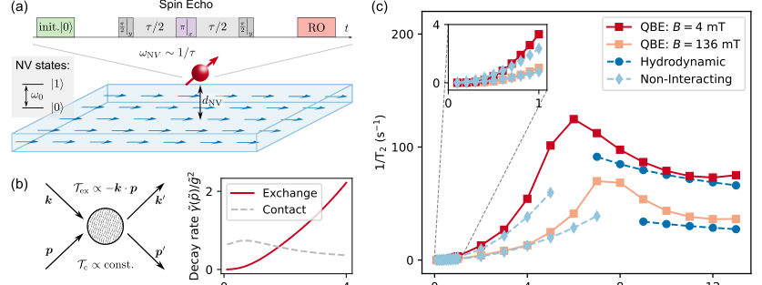
<figcaption class="paper-figure-caption"><b>Fig 1.</b> FIG. 1. Spin transport regimes of a 2D ferromagnet. (a) Schematic of the setup. A spin qubit (red), such as an NV center in diamond, probes the magnetic noise from thermal spin fluctuations in the sample via spin-echo-like measurements. (b) A key microscopic feature of magnons—elementary spin-flip excitations on top of the ferromagnetic state—is that the exchange-driven magnon–magnon interaction vertex depends on the momenta of the scattering particles, Tex ∝−k·p (left). As a result, high-momentum modes scatter strongly and can exhibit collective hydrodynamic behavior, whereas low-momentum modes interact only weakly. This is reflected in the momentum-dependent magnon decay rate, which...</figcaption>
</figure>
<figure class="paper-figure-card">
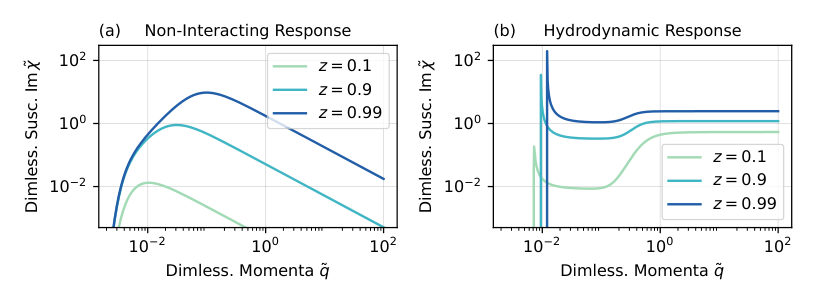
<figcaption class="paper-figure-caption"><b>Fig 2.</b> FIG. 2. Non-interacting and hydrodynamic reference limits. Dimensionless density–density response Im ˜χ(˜q, ˜ω) as a function of dimensionless probe momentum ˜q, evaluated at a fixed frequency ˜ω = 0.01, in the non-interacting limit (a) and hydrodynamic limit (b). The non-interacting response in (a) exhibits a broad incoherent single-particle continuum. By contrast, in the hydrodynamic limit in (b), the response develops a sharp peak at ˜q = ˜ω/˜c, corresponding to the emergence of a sound mode with velocity ˜c, and approaches a plateau as ˜q →∞.</figcaption>
</figure>
<figure class="paper-figure-card">
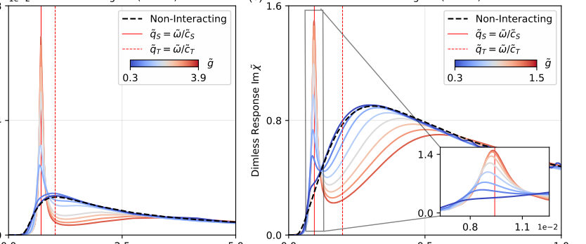
<figcaption class="paper-figure-caption"><b>Fig 3.</b> FIG. 3. Magnon transport in the dilute (z = 0.1) (a) and dense (z = 0.9) (b) regimes. The density–density linear response Im ˜χ(˜ω, ˜q), computed by solving the full QBE, is shown as a function of ˜q at the fixed frequency ˜ω = 0.01. As the dimensionless interaction strength ˜g increases, the response evolves from a broad, featureless ballistic spectrum to a spectrum with a sharp collective sound mode centered near the isentropic sound momentum, ˜qS = ˜ω/˜cS. The inset in (b) highlights the emergence of the sound peak and its convergence toward the isentropic prediction ˜qS.</figcaption>
</figure>
<figure class="paper-figure-card">
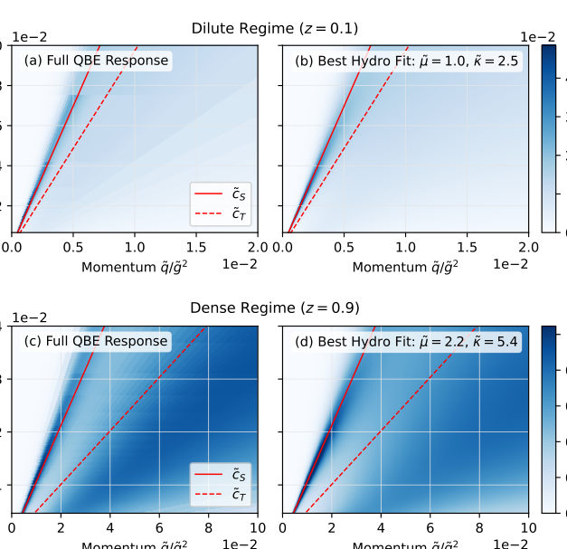
<figcaption class="paper-figure-caption"><b>Fig 4.</b> FIG. 4. Full frequency- and momentum-resolved linear response of a 2D ferromagnet in dilute (top row, z = 0.1) and dense (bottom row, z = 0.9) regimes. Panels (a) and (c) show the full QBE solution for Im ˜χ(˜ω, ˜q), reconstructed from the data in Fig. 3 using the scaling relation (17). Panels (b) and (d) show the corresponding best fits of the hydrodynamic response (27) to the QBE solution, with ˜µ and ˜κ as the only fitting parameters [see Appendix C for details]. The fitted response well captures the QBE one, including the emergence of the sound mode and the enhanced dissipation in the dense regime.</figcaption>
</figure>
<figure class="paper-figure-card">
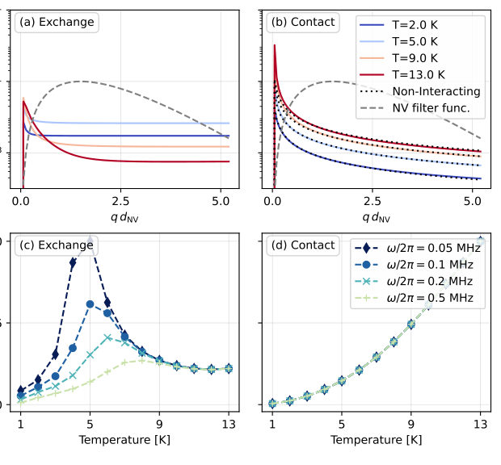
<figcaption class="paper-figure-caption"><b>Fig 5.</b> FIG. 5. Qubit signatures of exchange and contact Bose fluids. (a,b) Temperature evolution of the dimensionless momentum-resolved susceptibility Im ˜χ(q, ω) evaluated at ω/2π = 0.1 MHz and B = 4 mT for (a) exchange and (b) contact fluids. The dashed gray curves represent the qubit momentum filtering function [Eq. (32)]. (a) In the exchange fluid, this filtering function predominantly weights high momenta, where the susceptibility approaches a viscosity-dependent plateau [Eq. (34)]. (b) The contact fluid likewise exhibits a pronounced low-q sound peak. Unlike in the exchange fluid, however, the high-momentum tail, rather than saturating, decays rapidly and merges with the non-interacting...</figcaption>
</figure>
</div>

<p><strong>Summary.</strong> The paper introduces a novel mathematical technique using Gaussian function expansions to solve the complex Quantum Boltzmann Equation governing spin transport in 2D ferromagnets. This allows researchers to accurately model the crossover between low-temperature ballistic magnon behavior and high-temperature hydrodynamic flow. The results provide crucial microscopic insights into anomalous magnetic noise observed in real materials like CrCl3.</p>
<p><strong>Why it may be interesting.</strong> This work provides a sophisticated kinetic theory framework applicable to strongly interacting quantum many-body systems where simple approximations fail, offering tools for analyzing non-equilibrium dynamics in condensed matter magnets.</p>
<details>
<summary>Detailed structure</summary>
<p><strong>Main problem.</strong> The central problem is developing a microscopic theory capable of accurately describing spin transport in 2D ferromagnets across vastly different interaction regimes, specifically bridging ballistic and hydrodynamic behaviors.</p>
<p><strong>Main result.</strong> The authors successfully developed a method to solve the linearized Quantum Boltzmann Equation (QBE) that resolves a temperature-driven crossover from weakly interacting low-momentum magnons (ballistic) to strongly interacting high-momentum modes (hydrodynamic).</p>
<p><strong>Method.</strong> They employ an efficient representation of distribution functions as sums of Gaussians (GMM) to render the complex, multidimensional collision integrals in the QBE tractable for calculation.</p>
<p><strong>Model / system.</strong> The system is 2D ferromagnets modeled by an effective bosonic Hamiltonian describing magnon excitations. Dynamics are governed by the Quantum Boltzmann Equation (QBE), which accounts for momentum-dependent magnon-magnon interactions.</p>
<p><strong>Key observables.</strong> Linear response function $\chi(\mathbf{q}, \omega)$, magnetic noise ($1/T_2$ relaxation rate), and transport coefficients ($\mu, \kappa$).</p>
<p><strong>Important parameters / regimes.</strong> Temperature (driving the crossover), momentum transfer ($\mathbf{q}$), frequency ($\omega$), and interaction strength (contact vs. exchange).</p>
<p><strong>Assumptions / limitations.</strong> The primary assumption is that representing the distribution function as a sum of Gaussians allows for an accurate solution to the QBE, although the hydrodynamic limit requires low-frequency/long-wavelength approximations.</p>
<p><strong>Figures summary.</strong> Figures illustrate the schematic setup using NV centers and show the nonmonotonic temperature dependence of magnetic noise, confirming the crossover between transport regimes.</p>
<p><strong>Paper structure.</strong> The paper establishes the need for a QBE approach, develops the Gaussian representation method to solve the collision integrals, calculates linear response across different interaction types (contact vs. exchange), and finally compares the full QBE results against the formal hydrodynamic limit via global fitting.</p>
</details>
<details>
<summary>Abstract</summary>
<p>Recent discoveries of two-dimensional (2D) ferromagnets have stimulated intense interest in understanding and controlling their spin transport properties. A central microscopic feature of these systems is that exchange-driven magnon--magnon interactions are strongly momentum dependent: low-momentum magnons interact weakly, while high-momentum ones can scatter strongly and exhibit collective hydrodynamic behavior. Understanding transport in such systems therefore requires a microscopic description capable of capturing ballistic and hydrodynamic regimes on equal footing. The natural framework is the quantum Boltzmann equation (QBE), whose solution is notoriously difficult because of the multidimensional collision integrals. Here, we develop a method based on an efficient representation of distribution functions as sums of Gaussians, which renders the collision integrals tractable. This approach enables accurate solution of the linearized QBE and computation of momentum- and frequency-resolved linear response in 2D ferromagnets across a broad range of temperatures and magnetic fields. In particular, we resolve a temperature-driven crossover from a ballistic regime dominated by weakly interacting low-momentum magnons to a collective hydrodynamic regime governed by strongly interacting high-momentum modes. Applying this method to monolayer CrCl$_3$, we obtain good agreement with recent nitrogen-vacancy-center dephasing experiments that reported anomalous magnetic noise consistent with magnon sound. More broadly, our work establishes a general framework for computing momentum- and frequency-resolved linear response in interacting 2D quantum systems describable within quantum Boltzmann kinetics.</p>
</details>
<p><sub><a href="#top">↑ back to top</a></sub></p>

<p><a id="paper-2608.13975"></a></p>
<h3 id="neural-decoders-for-subsystem-many-hypercube-codes"><a href="http://arxiv.org/abs/2608.13975v1">Neural decoders for subsystem many-hypercube codes</a></h3>
<p><strong>Authors:</strong> Ryota Nakai, Hayato Goto<br>
<strong>Type:</strong> theory · <strong>Category:</strong> quantum information and computing · <strong>PDF:</strong> <a href="https://arxiv.org/pdf/2608.13975v1">https://arxiv.org/pdf/2608.13975v1</a><br>
<strong>Analysis basis:</strong> full PDF text, analyzed in chunks
<strong>Topic relevance:</strong> <code>methods for driven-dissipative</code> <strong>3/5</strong> · <code>quantum measurements</code> <strong>1/5</strong></p>
<div class="figure-strip-hint">↔ Scroll figures horizontally</div>
<div class="paper-figures-scroll">
<figure class="paper-figure-card">
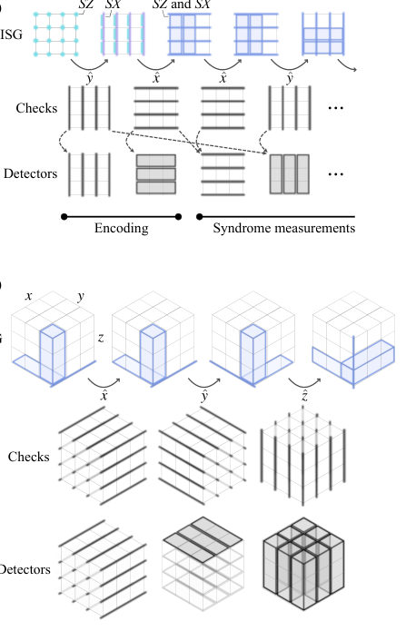
<figcaption class="paper-figure-caption"><b>Fig 1.</b> FIG. 1. (a) The instantaneous stabilizer groups (ISGs) in the level-2 code are shown with the corresponding measured check operators and detectors. The first two sets of the measurements are used to encode the logical-|0⟩state and the subsequent sets are used for syndrome measurements. The figure corresponds to the measurement sequence ˆ𝑦ˆ𝑥ˆ𝑥ˆ𝑦· · · . The arrows indicate the flow that the detectors are defined from the measurement outcomes of the check operators. Only the detectors from the 𝑍check measurements are shown. (b) The ISGs in the level-3 code after the logical-|0⟩state encoding are shown for the measurement sequence ˆ𝑥ˆ𝑦ˆ𝑧. Only some of the ISG generators are shown while the...</figcaption>
</figure>
<figure class="paper-figure-card">
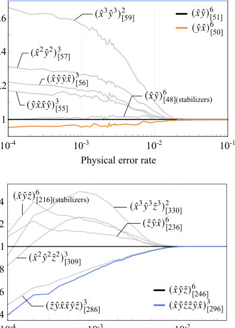
<figcaption class="paper-figure-caption"><b>Fig 2.</b> FIG. 2. Relative logical error rates per round of the MLP decoders compared with (a) ( ˆ𝑥ˆ𝑦)6 for the level-2 code, and (b) with ( ˆ𝑥ˆ𝑦ˆ𝑧)6</figcaption>
</figure>
<figure class="paper-figure-card">
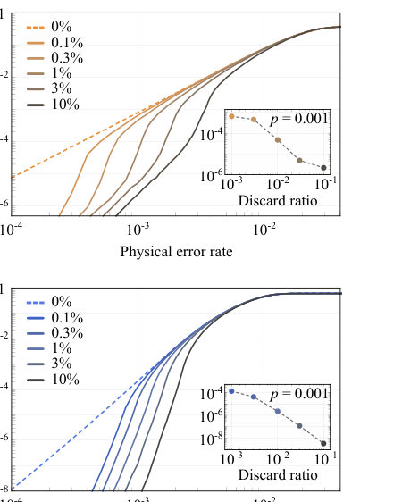
<figcaption class="paper-figure-caption"><b>Fig 3.</b> FIG. 3. Logical error rates per round after the postselection based on the mean entropy of the decoder’s predictions for (a) the level-2 and (b) level-3 codes. The same decoders as Fig. 2 are used. The percentage shown in the plot indicates the proportion of the discarded samples that have larger mean entropy (less confident). The dashed lines are the performance without postselection. The insets show the performance at physical error rate 𝑝= 0.001 as a function of the discard ratio.</figcaption>
</figure>
<figure class="paper-figure-card">
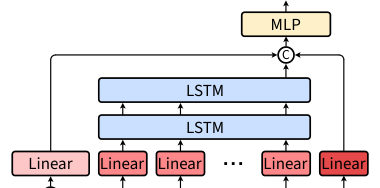
<figcaption class="paper-figure-caption"><b>Fig 4.</b> FIG. 4. The neural-network architecture of the LSTM decoders. The embedding layer consists of three types of linear mappings followed by ReLU. The outputs from the syndrome-measurements except the first are processed by two LSTM layers and then fed into the MLP layer after concatenated with the first and last outputs of the embedding layer. Circles with C represent the concatenation.</figcaption>
</figure>
<figure class="paper-figure-card">
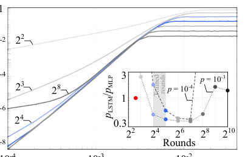
<figcaption class="paper-figure-caption"><b>Fig 5.</b> FIG. 5. Performance of the LSTM decoders for the (a) level-2 and (b) -3 codes. The inset shows the relative logical error rate per round for physical error rates 𝑝= 10−3 and 10−4 compared with the MLP decoder’s performance for six rounds. The shaded regions indicate the rounds that are used in training. The red points show the performance of the MLP decoders shown in Sec. III.</figcaption>
</figure>
</div>

<p><strong>Summary.</strong> This paper introduces neural network decoders (MLP and LSTM) to improve the decoding of subsystem many-hypercube quantum error-correcting codes. By analyzing syndrome measurements in a circuit-level noise model, the authors demonstrate that LSTMs significantly outperform simpler models, especially when generalizing to longer measurement sequences. The results highlight how advanced machine learning techniques can enhance fault tolerance for complex quantum hardware.</p>
<p><strong>Why it may be interesting.</strong> This work directly addresses fault tolerance and error correction in complex quantum codes, which is foundational knowledge for any theoretical physicist working on open quantum systems or quantum computation architectures.</p>
<details>
<summary>Detailed structure</summary>
<p><strong>Main problem.</strong> Developing high-performance decoders for subsystem many-hypercube (MHC) codes, which are complicated by gauge degrees of freedom.</p>
<p><strong>Main result.</strong> The authors show that LSTM neural network decoders outperform simple fully connected models and can generalize to decode syndrome measurement sequences longer than those used in training.</p>
<p><strong>Method.</strong> They employ deep learning architectures (MLP and LSTM) trained on circuit-level noise simulations to map syndrome measurements to error syndromes, incorporating postselection based on Shannon entropy.</p>
<p><strong>Model / system.</strong> The study focuses on subsystem MHC codes (Level-2 and Level-3 versions), analyzed within a detailed circuit-level noise model that includes single-qubit and two-qubit depolarizing errors.</p>
<p><strong>Key observables.</strong> Logical error rate per round, mean Shannon entropy ($\mathcal{S}$), and the evolution of the Instantaneous Stabilizer Group (ISG).</p>
<p><strong>Important parameters / regimes.</strong> Physical error rate ($p$), code level (2 or 3), and the length/sequence of syndrome measurements.</p>
<p><strong>Assumptions / limitations.</strong> The analysis assumes a circuit-level noise model, and performance improvements rely on postselecting samples with low mean Shannon entropy to ensure prediction reliability.</p>
<p><strong>Figures summary.</strong> Figures illustrate the evolution of ISGs based on measurement sequences (Fig. 1), compare logical error rates using different measurement sequences (Fig. 2), demonstrate performance gains via postselection (Fig. 3), and detail the LSTM decoder architecture (Fig. 4).</p>
<p><strong>Paper structure.</strong> The paper progresses by first defining the challenge posed by MHC codes, then detailing the use of MLPs for sequence optimization, followed by introducing LSTMs to test generalization capabilities over longer decoding sequences.</p>
</details>
<details>
<summary>Abstract</summary>
<p>To maximize the potential of quantum error-correcting codes, it is essential to develop high-performance decoders. The subsystem many-hypercube (MHC) codes have been developed to achieve both high encoding rates and low-weight syndrome-measurements, but the introduction of gauge degrees of freedom makes decoding more challenging. In this work, we develop neural-network-based decoders for the subsystem MHC codes in a circuit-level noise model. We demonstrate that even the gauge-measurement information can be utilized for decoding by carefully arranging the syndrome-measurement sequence, improving the decoding performance. We further show that recurrent neural decoders outperform simple fully connected neural decoders, and can decode syndrome-measurement sequences longer than those used during training.</p>
</details>
<p><sub><a href="#top">↑ back to top</a></sub></p>

<p><a id="paper-2608.14353"></a></p>
<h3 id="orbital-hall-effect-in-weyl-semimetals-from-quantum-geometric-band-interference"><a href="http://arxiv.org/abs/2608.14353v1">Orbital Hall Effect in Weyl Semimetals from quantum geometric band interference</a></h3>
<p><strong>Authors:</strong> Chiara Pacella, Maximilian Ünzelmann, Ahmed Osman, Tim Figgemeier, Friedrich Reinert, Angel Rubio, Domenico Di Sante<br>
<strong>Type:</strong> theory · <strong>Category:</strong> other · <strong>PDF:</strong> <a href="https://arxiv.org/pdf/2608.14353v1">https://arxiv.org/pdf/2608.14353v1</a><br>
<strong>Analysis basis:</strong> full PDF text, analyzed in chunks
<strong>Topic relevance:</strong> <code>Keldysh / 2PI / non-Gaussian methods</code> <strong>3/5</strong> · <code>quantum measurements</code> <strong>1/5</strong></p>
<div class="figure-strip-hint">↔ Scroll figures horizontally</div>
<div class="paper-figures-scroll">
<figure class="paper-figure-card">
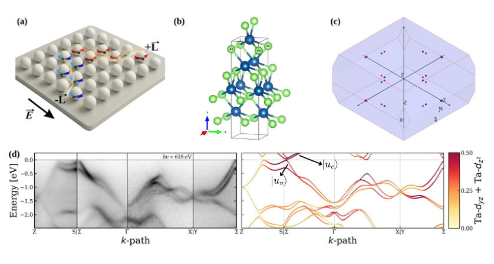
<figcaption class="paper-figure-caption"><b>Fig 1.</b> FIG. 1: a) Illustration of the orbital Hall effect, where an external electric field ⃗E produces a transverse, charge-neutral flow of orbital angular momenta. Opposite OAM-polarized electrons move in opposite directions. b) Conventional unit cell of TaAs. The TaAs family (TaAs, TaP, NbAs, NbP) crystallizes in space group I41md (point group C4v), that lacks inversion symmetry. The blue spheres represent the Ta/Nb atoms, the green ones the As/P atoms. c) Brillouin zone of TaAs with Weyl nodes. This family of materials hosts 12 pairs of symmetry-robust Weyl nodes and associated surface Fermi arcs [31–34]. The presence of time-reversal symmetry prescribes that for each Weyl point at k0 there is...</figcaption>
</figure>
<figure class="paper-figure-card">
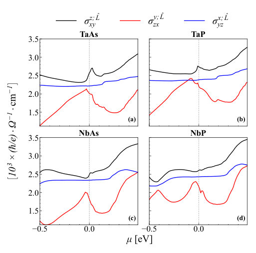
<figcaption class="paper-figure-caption"><b>Fig 2.</b> FIG. 2: a) Chemical potential dependence of the orbital Hall conductivity for the TaAs family of Weyl semimetals. The Fermi energy is set to zero at the charge neutral point.</figcaption>
</figure>
<figure class="paper-figure-card">
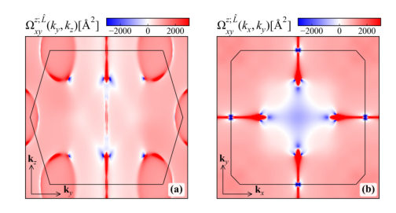
<figcaption class="paper-figure-caption"><b>Fig 3.</b> FIG. 3: k-space texture of the orbital Berry curvature of TaAs projected on the a) ky −kz plane and the b) kx −ky plane. The projections were obtained by summing all the contributions along the a) kz and b) kx directions, respectively. The black contours indicate the first BZ boundaries.</figcaption>
</figure>
<figure class="paper-figure-card">
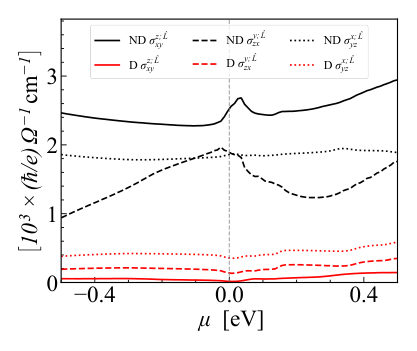
<figcaption class="paper-figure-caption"><b>Fig 4.</b> FIG. 4: Orbital Hall conductivity of TaAs as a function of Fermi energy, decomposed into diagonal and non-diagonal contributions. Red curves show the diagonal terms, while black curves show the non-diagonal terms for different orbital-current tensor components.</figcaption>
</figure>
</div>

<p><strong>Summary.</strong> This theoretical work investigates how Orbital Angular Momentum (OAM) is transported in Weyl semimetals, finding that the OHE mechanism is strongly governed by band geometry. By decomposing the conductivity into diagonal and non-diagonal parts, the authors prove that interband hybridization effects are responsible for the dominant contribution to this topological transport phenomenon.</p>
<p><strong>Why it may be interesting.</strong> While focused on condensed matter topology, the mathematical framework of calculating induced responses (like $\delta\langle \hat{L}_\gamma 
angle$) using time-dependent perturbation theory in a gapped/degenerate system shares conceptual links with open quantum systems dynamics and response functions.</p>
<details>
<summary>Detailed structure</summary>
<p><strong>Main problem.</strong> The primary goal is to understand the microscopic mechanisms governing Orbital Angular Momentum (OAM) transport, specifically its connection to band geometry in topological materials.</p>
<p><strong>Main result.</strong> A direct link is established showing that the non-diagonal contribution ($\sigma^{ND}$) arising from interband hybridization is dominant and significantly enhances the Orbital Hall Effect (OHE) in Weyl semimetals.</p>
<p><strong>Method.</strong> The study employs ab initio Density Functional Theory (DFT) combined with a minimal Weyl model analyzed via linear response theory and Kubo formalism to calculate orbital/spin conductivities.</p>
<p><strong>Model / system.</strong> The research focuses on the TaAs family of Weyl semimetals, using both full DFT calculations and simplified two-band Weyl toy models to isolate key physical mechanisms.</p>
<p><strong>Key observables.</strong> Orbital Hall Conductivity ($\sigma^{\gamma;L}$), Spin Hall Conductivity ($\sigma^{\gamma;S}$), and their decomposition into diagonal ($\sigma^D$) and non-diagonal ($\sigma^{ND}$) contributions.</p>
<p><strong>Important parameters / regimes.</strong> The analysis is performed at charge neutrality ($\mu=0, T=0	ext{ K}$); the relative magnitude of OHE vs. SHE (OHE being $\sim 10$ times larger).</p>
<p><strong>Assumptions / limitations.</strong> Calculations are limited to the independent-particle approximation and use specific forms for projected Berry curvature within the Kubo formula.</p>
<p><strong>Figures summary.</strong> Figures illustrate crystal structures, Weyl nodes in TaAs, band structure comparisons (ARPES vs. DFT), and crucially, plots decomposing the OHE into dominant non-diagonal and smaller diagonal components across varying Fermi energies.</p>
<p><strong>Paper structure.</strong> The paper progresses from establishing the general problem of OAM transport to applying DFT on specific materials, developing a minimal Weyl model to analytically decompose the conductivity ($\sigma = \sigma^D + \sigma^{ND}$), and finally demonstrating that topology enhances transport via interband mixing terms.</p>
</details>
<details>
<summary>Abstract</summary>
<p>Orbital angular momentum (OAM) transport in solids, prominently manifested in the orbital Hall effect, has emerged as a fundamental phenomenon that can decisively exceed its spin-based counterparts. However, the microscopic mechanisms governing OAM dynamics remain only partially understood. In particular, the role of band geometry in orbital transport is still largely unresolved. Here we address this question in the TaAs family of Weyl semimetals, TaAs, TaP, NbAs, and NbP, whose well-established topology and associated OAM textures make them an ideal platform in this context. Using ab initio density functional theory, complemented by a minimal Weyl model based on adiabatic perturbation theory, we establish --- both numerically and analytically --- a direct link between OAM transport, band geometry, and topological electronic structure.</p>
</details>
<p><sub><a href="#top">↑ back to top</a></sub></p>

<p><a id="paper-2608.13936"></a></p>
<h3 id="cold-atom-comagnetometry-via-optical-control-of-spin-states"><a href="http://arxiv.org/abs/2608.13936v1">Cold-atom comagnetometry via optical control of spin states</a></h3>
<p><strong>Authors:</strong> J. -L. Zhang, W. -T. Luo, Y. A. Yang, Y. -Q. Wang, T. Xia, Z. -T. Lu<br>
<strong>Type:</strong> experiment · <strong>Category:</strong> other · <strong>PDF:</strong> <a href="https://arxiv.org/pdf/2608.13936v1">https://arxiv.org/pdf/2608.13936v1</a><br>
<strong>Analysis basis:</strong> full PDF text, analyzed in chunks
<strong>Topic relevance:</strong> <code>analog quantum simulation</code> <strong>2/5</strong> · <code>quantum measurements</code> <strong>2/5</strong> · <code>QC/QI experiment</code> <strong>1/5</strong> · <code>interference shaping light</code> <strong>1/5</strong> · <code>quantum optics experiment</code> <strong>1/5</strong></p>
<div class="figure-strip-hint">↔ Scroll figures horizontally</div>
<div class="paper-figures-scroll">
<figure class="paper-figure-card">
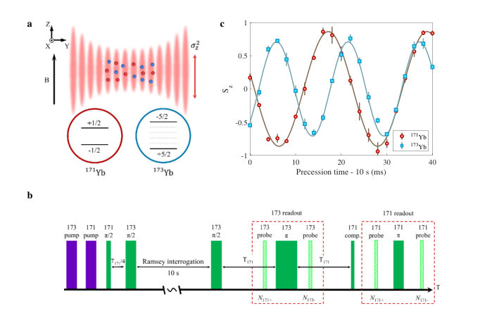
<figcaption class="paper-figure-caption"><b>Fig 1.</b> Fig. 1 171Yb-173Yb cold-atom comagnetometer. (a) Atoms of 171Yb and 173Yb are mixed and confined together in the optical lattice. A uniform field of 10-100 mG is applied to define the quantization axis in the vertical Z-direction. While 171Yb (I = 1/2) naturally has no tensor light shifts, 173Yb (I = 5/2) is prepared into the cat state, which is immune to decoherence caused by the tensor shifts in the optical lattice. (b) Measurement sequence of the simultaneous Ramsey interferometry. The arrangement of the 399 nm pump pulses (solid purple), 556 nm Rabi pulses (solid dark green), and 556 nm probe pulses (hatched light green) are explained in details in the main text. (c) Ramsey signals at...</figcaption>
</figure>
<figure class="paper-figure-card">
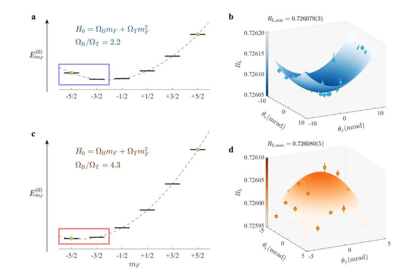
<figcaption class="paper-figure-caption"><b>Fig 2.</b> Fig. 2 The combined effect of Zeeman and tensor shifts on the Larmor frequency (ω173) of the cat state of 173Yb, and on the comagnetometer ratio RL = ω171/ω173. 173Yb atoms are populated in |5/2, ±5/2⟩g (green dots). (a) At ΩB/ΩT = 2.2, where |5/2, −5/2⟩g is shifted higher than |5/2, −3/2⟩g, the σx term mixes the two states in the rectangle and pushes |5/2, −5/2⟩g further up. This results in a lower frequency ω173, and a higher RL value. (b) Under 50 mG, corresponding to ΩB/ΩT = 2.2, RL is mapped as the magnetic- field orientation is scanned around the Z-direction. The higher RL values in (a) results in a surface with positive curvatures. (c) At ΩB/ΩT = 4.3, where |5/2, −5/2⟩g is shifted...</figcaption>
</figure>
<figure class="paper-figure-card">
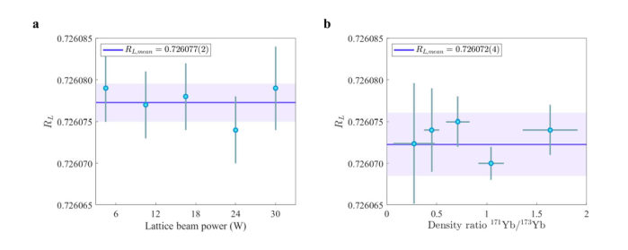
<figcaption class="paper-figure-caption"><b>Fig 3.</b> Fig. 3 Investigating possible systematic effects. (a) In a magnetic field of 100 mG, the lattice beam power is varied. (b) With both the magnetic field and lattice parameters fixed, the density ratio between 171Yb and 173Yb is varied. No dependences on these experimental parameters are observed. Error bars: one standard deviation (1-σ) derived from 50 repeated measurements; solid lines: weighted averages.</figcaption>
</figure>
<figure class="paper-figure-card">
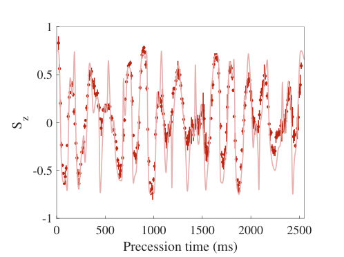
<figcaption class="paper-figure-caption"><b>Fig 4.</b> Fig. 4 Precession of a coherent spin state of 173Yb under Bx = 23.5 mG and 8 W lattice power. Error bars: one standard deviation (1-σ) derived from 3 repeated measurements. The solid curve represents simulation results.</figcaption>
</figure>
<figure class="paper-figure-card">
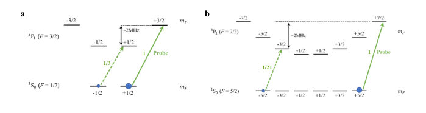
<figcaption class="paper-figure-caption"><b>Fig 5.</b> Fig. 5 Transitions used to measure spin-state populations in 171Yb (a) and 173Yb (b). The arrow of solid line indicates a cycling transition used for population measurements; the arrow of dashed line indicates a spin-flip transition suppressed by large detunings.</figcaption>
</figure>
</div>

<p><strong>Summary.</strong> The authors report on a high-precision cold-atom comagnetometer using $^{171}	ext{Yb}$ and $^{173}	ext{Yb}$ trapped in an optical lattice. By employing techniques like Schrödinger cat states to suppress systematic light shifts, they achieved long coherence times ($60 	ext{ s}$) and measured the ratio of nuclear magnetic moments with $4 	ext{ ppm}$ precision. This establishes a robust quantum platform for fundamental physics tests.</p>
<p><strong>Why it may be interesting.</strong> This work exemplifies cutting-edge experimental AMO physics by combining multiple advanced techniques—optical lattice trapping, multi-isotope spin manipulation, and sophisticated error suppression via quantum state engineering—to push the limits of precision measurement.</p>
<details>
<summary>Detailed structure</summary>
<p><strong>Main problem.</strong> To develop a highly sensitive cold-atom comagnetometer for precision sensing of magnetic fields and fundamental constants, overcoming limitations in coherence time and systematic shifts.</p>
<p><strong>Main result.</strong> The system achieved a spin coherence time of 60 s and determined the ratio of nuclear magnetic moments with $4 	ext{ ppm}$ precision, establishing a new platform for quantum-enhanced measurements.</p>
<p><strong>Method.</strong> Simultaneous Ramsey interferometry on two isotopes ($^{171}	ext{Yb}$ and $^{173}	ext{Yb}$) trapped in an optical lattice, utilizing advanced light shift suppression techniques like Schrödinger cat states.</p>
<p><strong>Model / system.</strong> The platform uses the nuclear spins of $^{171}	ext{Yb}$ ($   ext{spin-}1/2$) and $^{173}	ext{Yb}$ ($  ext{spin-}5/2$) in an optical lattice. Systematic shifts are managed by enforcing linear polarization to suppress vector light shifts, and using cat states for $^{173}	ext{Yb}$ to suppress tensor shifts.</p>
<p><strong>Key observables.</strong> Spin coherence time ($60 	ext{ s}$), Magnetic Noise Suppression Factor ($> 3 	imes 10^4$), Ratio of Nuclear Magnetic Moments ($\mu_{171}/\mu_{173}$).</p>
<p><strong>Important parameters / regimes.</strong> Larmor frequencies ($\omega_{171}, \omega_{173}$); the ratio $R_L = \omega_{171}/\omega_{173}$.</p>
<p><strong>Assumptions / limitations.</strong> The coherence time is limited by interspecies collisions, and residual light shifts must be carefully accounted for in the analysis.</p>
<p><strong>Figures summary.</strong> Figures illustrate the experimental setup (mixed atoms in a lattice), the Ramsey interferometry sequence, resulting fringe decay curves showing $60 	ext{ s}$ coherence, and plots mapping the dependence of the measured ratio on magnetic field orientation.</p>
<p><strong>Paper structure.</strong> The paper details the physical system and measurement protocol, focusing heavily on mitigating systematic errors (light shifts) through quantum state preparation (cat states) to achieve high precision in measuring the frequency ratio $R_L$ and subsequently the nuclear moment ratio.</p>
</details>
<details>
<summary>Abstract</summary>
<p>Atomic spin-based comagnetometers are powerful tools for precision sensing and tests of fundamental physics. Compared with the widely used gas-cell comagnetometer systems, cold-atom systems offer access to much shorter distance scales and allow implementation of {optical} quantum control techniques. However, in order to realize long spin coherence times with cold atoms, it is necessary to employ diamagnetic atoms and overcome decoherence induced by light shifts. Here we demonstrate a cold-atom comagnetometer based on the nuclear spins of $^{171}$Yb (spin-1/2) and $^{173}$Yb (spin-5/2), jointly trapped in an optical lattice. Vector light shifts are suppressed by enforcing linear polarization of the lattice, while tensor shifts in $^{173}$Yb are suppressed via the use of a Schrödinger cat state. This enables simultaneous Ramsey interferometry on both isotopes with a spin coherence time of 60 s. We achieve a magnetic noise suppression factor exceeding $3\times10^4$, and determine the ratio of nuclear magnetic moments to 4 ppm precision. Our results establish a new cold-atom platform for spin-based sensing and open pathways toward quantum-enhanced searches for physics beyond the Standard Model.</p>
</details>
<p><sub><a href="#top">↑ back to top</a></sub></p>

<p><a id="paper-2608.14234"></a></p>
<h3 id="dispersive-phonon-driven-room-temperature-ni1-ni2-polaron-hopping-in-spin-charge-coupled-rutile-niobate"><a href="http://arxiv.org/abs/2608.14234v1">Dispersive-phonon-driven room-temperature Ni1+-Ni2+ polaron hopping in spin-charge coupled rutile niobate</a></h3>
<p><strong>Authors:</strong> Gourab Roy, Mohit Kumar, Sayan Ghosh, Ekta Kushwaha, Manh Duc Le, Devashibhai T. Adroja, Tathamay Basu<br>
<strong>Type:</strong> both · <strong>Category:</strong> strongly correlated electrons · <strong>PDF:</strong> <a href="https://arxiv.org/pdf/2608.14234v1">https://arxiv.org/pdf/2608.14234v1</a><br>
<strong>Analysis basis:</strong> full PDF text, analyzed in chunks
<strong>Topic relevance:</strong> <code>driven-dissipative phase transition</code> <strong>2/5</strong> · <code>Keldysh / 2PI / non-Gaussian methods</code> <strong>1/5</strong> · <code>analog quantum simulation</code> <strong>1/5</strong> · <code>correlated / nonlocal dissipation</code> <strong>1/5</strong> · <code>methods for driven-dissipative</code> <strong>1/5</strong> · <code>non-equilibrium universality</code> <strong>1/5</strong></p>
<div class="figure-strip-hint">↔ Scroll figures horizontally</div>
<div class="paper-figures-scroll">
<figure class="paper-figure-card">
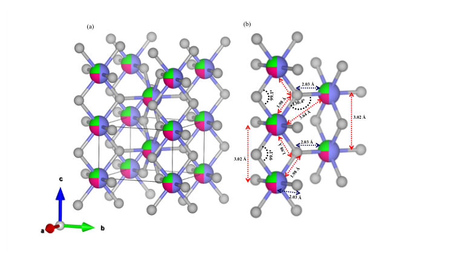
<figcaption class="paper-figure-caption"><b>Fig 1.</b> Figure 1: (a) Crystal structure of NiNb2O6 crystallizing in the tetragonal P42/mnm space group. Violet and green spheres represent Nb and Ni atoms, respectively, while grey spheres denote oxygen atoms. (b) Enlarged view of the local octahedral environment showing the M–O bond lengths and M–O–M bond angles.</figcaption>
</figure>
<figure class="paper-figure-card">
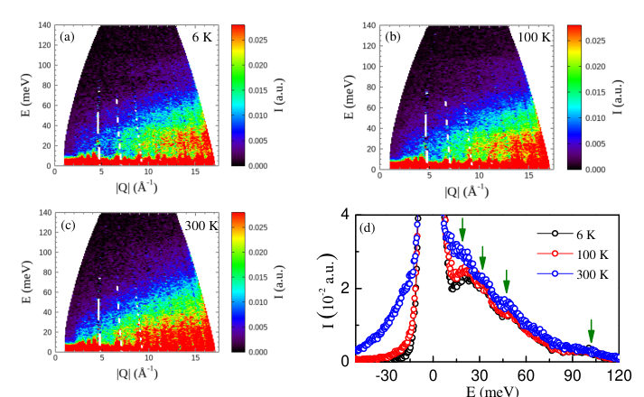
<figcaption class="paper-figure-caption"><b>Fig 2.</b> Figure 2: (a-c) Color contour plots for Ei = 180 meV, revealing energy excitations at 6, 100, and 300 K, respectively. (d) Comparison of phonon excitations (Intensity(I) vs. Energy Transfer) at 6, 100 and 300 K in the higher Q region 8 to 16 Å−1.</figcaption>
</figure>
<figure class="paper-figure-card">
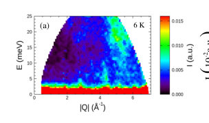
<figcaption class="paper-figure-caption"><b>Fig 3.</b> Figure 3: (a) Color contour plots for Ei = 29.7 meV, showing energy excitations at 6 K. (b) Comparison of magnetic excitations at 6 K, 100 K, and 300 K in the low-Q region (0.4–0.8 Å−1). (c) Comparison of phonon excitations at 6 K, 100 K, and 300 K in the high-Q region (3.5– 5.2 Å−1).</figcaption>
</figure>
<figure class="paper-figure-card">
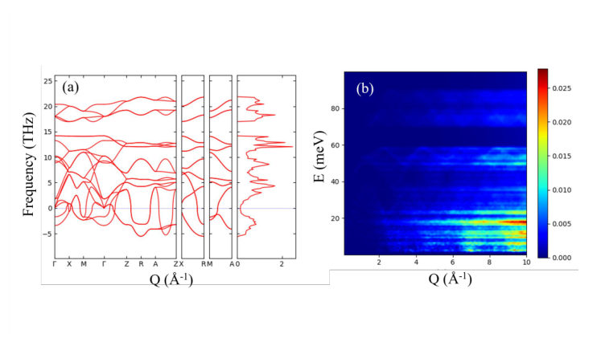
<figcaption class="paper-figure-caption"><b>Fig 4.</b> Figure 4: (a) Calculated phonon modes based upon pre-trained machine learning force fields. The vertical axis represents the phonon energy in units of THz. Panels indicate wave-vector dependence in reciprocal space using standard reciprocal-space notation. (b) Calculated phonon scattering intensity at 300 K.</figcaption>
</figure>
<figure class="paper-figure-card">
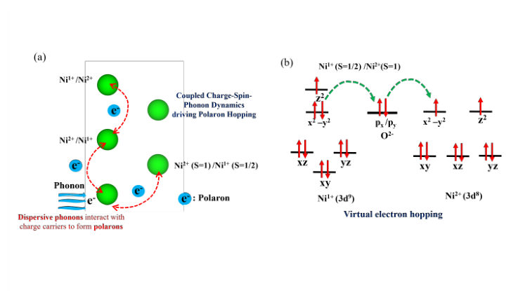
<figcaption class="paper-figure-caption"><b>Fig 5.</b> Figure 5: (a) Schematic illustration of polaron hopping dynamics between Ni1+ and Ni2+ sites mediated by coupled charge–spin–phonon interactions. The hopping electron locally distorts neighbouring NiO6 octahedra, facilitating distortion propagation during charge transport. (b) Illustration of virtual electron hopping between Ni1+ and Ni2+ sites, which assists the polaron hopping mechanism through spin-dependent electronic exchange pathways.</figcaption>
</figure>
</div>

<p><strong>Summary.</strong> This work investigates polaron hopping in rutile niobate by demonstrating that the process is mediated by a coupled charge-spin-phonon mechanism. Using inelastic neutron scattering and machine learning simulations, the authors identified dispersive phonon modes and low-energy magnetic excitations. The findings establish a clear microscopic pathway for delocalized charge transport driven by lattice dynamics at room temperature.</p>
<p><strong>Why it may be interesting.</strong> The explicit coupling between electronic degrees of freedom (charge/spin) and lattice vibrations (phonons) is central to understanding emergent quantum phenomena in strongly correlated materials, which has parallels with open quantum systems dynamics.</p>
<details>
<summary>Detailed structure</summary>
<p><strong>Main problem.</strong> The study aims to understand how lattice dynamics mediate polaron hopping in correlated oxides, specifically focusing on the $    ext{Ni}^{1+}-   ext{Ni}^{2+}$ mechanism and spin-charge coupling.</p>
<p><strong>Main result.</strong> The research provides microscopic evidence that delocalized polaron propagation is mediated by dispersive phonon excitations arising from coupled charge-spin-phonon interactions at room temperature.</p>
<p><strong>Method.</strong> A combination of inelastic neutron scattering (INS) experiments, machine-learning-based phonon calculations, and theoretical analysis using magnetic Hamiltonians was employed.</p>
<p><strong>Model / system.</strong> The physical system is polycrystalline rutile $ ext{NiNb}_2 ext{O}_6$, a mixed-valence magnetodielectric material exhibiting $  ext{Ni}^{1+}/   ext{Ni}^{2+}$ charge fluctuations and associated local lattice distortions ($   ext{NiO}_6$ octahedra).</p>
<p><strong>Key observables.</strong> Dispersive phonon excitations observed at 21, 33, and 47 meV via INS; low-energy magnetic excitations at 4 and 8 meV.</p>
<p><strong>Important parameters / regimes.</strong> Room temperature (300 K) operation; lattice distortion parameters like bond lengths ($\sim 1.87 	ext{ Å}$ to $2.46 	ext{ Å}$) and angles ($\approx 99.1^\circ$).</p>
<p><strong>Assumptions / limitations.</strong> The polaron hopping mechanism is governed by a coupled charge-spin-phonon interaction, and the high-symmetry structure may be dynamically unstable.</p>
<p><strong>Figures summary.</strong> Figures show energy excitation spectra (INS) at various temperatures, comparing experimental data with MLFF calculations; structural details illustrate local octahedral distortions.</p>
<p><strong>Paper structure.</strong> The paper establishes the problem by reviewing the need to understand lattice mediation in correlated oxides. It presents INS results showing dispersive phonons and low-energy magnetic signals. The core argument links these observations via coupled charge-spin-phonon interactions, supported by MLFF calculations confirming phonon origins and structural instability.</p>
</details>
<details>
<summary>Abstract</summary>
<p>Understanding how lattice dynamics mediate polaron hopping is essential for designing multifunctional correlated oxides. Here, we demonstrate room-temperature dispersive phonon excitations and elucidate the Ni1+-Ni2+ polaron-hopping mechanism and the presence of rare spin-charge-phonon coupling even in a magnetically short-range-ordered state in rutile niobate, a rare room-temperature magnetodielectric system. We reveal room-temperature dispersive phonon excitations using inelastic neutron scattering (INS), complemented by machine-learning-based phonon calculations, to establish the microscopic origin of the polaron-hopping mechanism. Experimental evidence of dispersive phonon-driven polaron hopping is scarce. INS measurements show significant dispersive phonon excitations at 21, 33, and 47 meV, implying collective lattice dynamics that enable delocalized polaron propagation via coupled charge-spin-phonon interactions. Dispersive phonons couple to charge carriers and promote correlated NiO6 lattice distortions, facilitating delocalized polaron hopping. Low-energy magnetic excitations at 4 and 8 meV indicate the presence of local short-range magnetic correlations or spin-orbit-coupling-induced anisotropy in deformed NiO6 octahedra, which are thoroughly discussed. Machine-learning phonon calculations replicate the experimentally observed phonon excitations and demonstrate lattice instability, which is compatible with dynamic local distortions caused by polaron production. These findings provide microscopic evidence for a coupled charge-spin-phonon mechanism that mediates polaron hopping in rutile oxide systems.</p>
</details>
<p><sub><a href="#top">↑ back to top</a></sub></p>

<p><a id="paper-2608.13781"></a></p>
<h3 id="entanglement-asymmetry-characterization-of-the-chiral-anomaly"><a href="http://arxiv.org/abs/2608.13781v1">Entanglement asymmetry characterization of the Chiral Anomaly</a></h3>
<p><strong>Authors:</strong> Alfred Benedito German Sierra<br>
<strong>Type:</strong> theory · <strong>Category:</strong> statistical mechanics · <strong>PDF:</strong> <a href="https://arxiv.org/pdf/2608.13781v1">https://arxiv.org/pdf/2608.13781v1</a><br>
<strong>Analysis basis:</strong> full PDF text, analyzed in chunks
<strong>Topic relevance:</strong> <code>analog quantum simulation</code> <strong>2/5</strong> · <code>driven-dissipative phase transition</code> <strong>2/5</strong> · <code>correlated / nonlocal dissipation</code> <strong>1/5</strong> · <code>non-equilibrium universality</code> <strong>1/5</strong> · <code>quantum measurements</code> <strong>1/5</strong></p>
<div class="figure-strip-hint">↔ Scroll figures horizontally</div>
<div class="paper-figures-scroll">
<figure class="paper-figure-card">
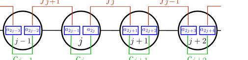
<figcaption class="paper-figure-caption"><b>Fig 1.</b> FIG. 1: Majoranas associated with site and link-fermions cj and fj.</figcaption>
</figure>
<figure class="paper-figure-card">
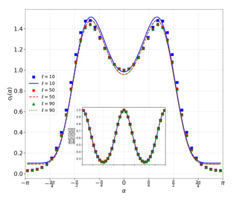
<figcaption class="paper-figure-caption"><b>Fig 2.</b> FIG. 2: Numerical decomposition of Z2 2[α] for the GS in the TL: det [T ]ℓ(α) in the inset and oℓ(α) in the main panel. The dependence on ℓarises almost entirely from oℓ(α) near the saddle points α = ±π/3. Symbols denote exact numerical results, while lines show the corresponding fits.</figcaption>
</figure>
<figure class="paper-figure-card">
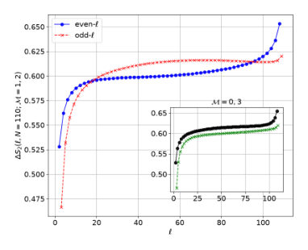
<figcaption class="paper-figure-caption"><b>Fig 3.</b> FIG. 4: Axial EA of the GS for N = 110 and n = 2. For M = 1, 2, the even- and odd-ℓ branches cross at ℓ/N = 1/4 and 3/4. No such crossings occur for M = 0, 3 (inset).</figcaption>
</figure>
<figure class="paper-figure-card">
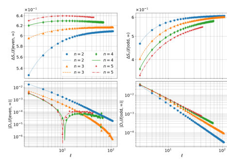
<figcaption class="paper-figure-caption"><b>Fig 4.</b> FIG. 3: Axial EA of the GS in the TL. Symbols denote numerical data, while lines in the upper panels show fits to (17) and (18). The lower panels display the finite differences Dn(ℓ| p, ∞) obtained from the fitted curves. For n = 4, 5, ℓ0 ∼12, 11.</figcaption>
</figure>
<figure class="paper-figure-card">
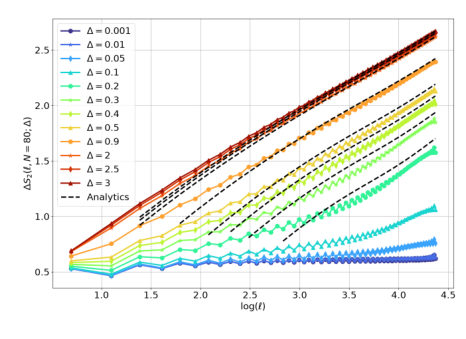
<figcaption class="paper-figure-caption"><b>Fig 5.</b> FIG. 5: Axial EA of the state |Z = 0⟩at N = 80 and n = 2 for ∆∈[0.001, 3]. The analytical prediction is shown for ∆≥0.2 only for the values of ℓsuch that pℓ&gt; 1.5.</figcaption>
</figure>
</div>

<p><strong>Summary.</strong> This theoretical work uses entanglement asymmetry ($\Delta S_n$) to characterize the chiral anomaly in a lattice fermion model. The authors demonstrate that $\Delta S_n$ remains non-zero in the thermodynamic limit despite vanishing classical commutators, providing an entanglement signature for the anomaly. This methodology offers a robust tool for probing subtle symmetry breaking in strongly correlated quantum systems.</p>
<p><strong>Why it may be interesting.</strong> While focused on QFT anomalies, the use of entanglement measures like $\Delta S_n$ to probe subtle ground state properties (like anomalous symmetries) is a powerful technique applicable to understanding quantum phases in many interacting systems studied in AMO physics.</p>
<details>
<summary>Detailed structure</summary>
<p><strong>Main problem.</strong> The study characterizes the entanglement asymmetry ($\Delta S_n$) as a tool to detect and quantify the chiral anomaly in lattice quantum field theories.</p>
<p><strong>Main result.</strong> The entanglement asymmetry remains non-zero in the thermodynamic limit (TL) even when the classical commutator of the relevant charges vanishes, indicating a persistent local remnant of the chiral anomaly.</p>
<p><strong>Method.</strong> The analysis employs the entanglement asymmetry ($\Delta S_n$) calculated using $n$-th Rényi entropy applied to correlation matrices derived from lattice Hamiltonians.</p>
<p><strong>Model / system.</strong> The system is modeled by staggered spinless fermions on a chain with periodic boundary conditions, incorporating an explicit symmetry-breaking staggered mass term ($\Delta$).</p>
<p><strong>Key observables.</strong> Entanglement Asymmetry ($\Delta S_n$), scaling exponents ($q_B^{n,p}, q_A^{n,p}$), and finite-size corrections $R_n(\ell, N)$.</p>
<p><strong>Important parameters / regimes.</strong> Rényi index ($n$), subsystem length ($\ell$), system size ($N$), staggered mass term ($\Delta$), and the thermodynamic limit (TL).</p>
<p><strong>Assumptions / limitations.</strong> The calculations rely on approximating matrix elements using block-Toeplitz symbol product approximations and analyzing finite-size corrections via specific ansätze.</p>
<p><strong>Figures summary.</strong> Figures illustrate numerical decompositions of charge operators, axial EA in the TL showing novel scaling behavior, and fits to finite-size corrections $R_n(\ell, N)$ demonstrating algebraic decay with system size $N$.</p>
<p><strong>Paper structure.</strong> The paper progresses from defining the anomaly using lattice charges to applying entanglement asymmetry ($\Delta S_n$). It then analyzes the asymptotic behavior in the TL, contrasting results for different boundary conditions and symmetry-breaking regimes.</p>
</details>
<details>
<summary>Abstract</summary>
<p>Shao et al. recently showed that the 1+1D staggered fermion Hamiltonian admits a whole algebra of lattice operators that flow to the same axial charge in the thermodynamic limit (TL). On the lattice the principal axial charge does not commute with the vector charge, although their commutator is expected to vanish in the TL, providing a lattice realization of the chiral anomaly. We investigate the effect of this anomaly on the ground state(s) using the entanglement asymmetry. Unexpectedly, the asymmetry remains nonzero in the TL, despite the vanishing of the commutator, and exhibits a novel scaling behavior.</p>
</details>
<p><sub><a href="#top">↑ back to top</a></sub></p>

<p><a id="paper-2608.13855"></a></p>
<h3 id="small-world-structure-of-quantum-computer-hardware"><a href="http://arxiv.org/abs/2608.13855v1">Small-world structure of quantum computer hardware</a></h3>
<p><strong>Authors:</strong> S. J. da Silva Junior, D. L. Shepelyansky, J. Lages<br>
<strong>Type:</strong> theory · <strong>Category:</strong> statistical mechanics · <strong>PDF:</strong> <a href="https://arxiv.org/pdf/2608.13855v1">https://arxiv.org/pdf/2608.13855v1</a><br>
<strong>Analysis basis:</strong> full PDF text, analyzed in chunks
<strong>Topic relevance:</strong> <code>analog quantum simulation</code> <strong>2/5</strong> · <code>scars &amp; prethermalization</code> <strong>2/5</strong> · <code>driven-dissipative phase transition</code> <strong>1/5</strong> · <code>methods for driven-dissipative</code> <strong>1/5</strong> · <code>non-equilibrium universality</code> <strong>1/5</strong></p>
<div class="figure-strip-hint">↔ Scroll figures horizontally</div>
<div class="paper-figures-scroll">
<figure class="paper-figure-card">
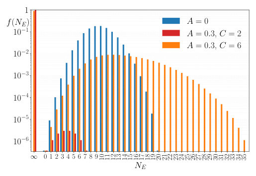
<figcaption class="paper-figure-caption"><b>Fig 1.</b> FIG. 1. Distribution f(NE) of quantum register Erd˝os num- bers NE for a quantum computer with nq = 24 qubits. The vertical axis gives the fraction of quantum register states hav- ing Erd˝os number NE. Results are shown for A = 0 (■), A = 0.3 with C = 2 (■), and A = 0.3 with C = 6 (■). The Erd˝os quantum register state (hub) is defined as the state whose energy is closest to the center of the central noninter- acting band (total spin Sz = 0). An Erd˝os number (possibly infinite) is assigned to each of the 2 704 156 quantum register states in the band. The column labeled ∞corresponds to register states not connected to the Erd˝os register state. The results are shown for one disorder...</figcaption>
</figure>
<figure class="paper-figure-card">
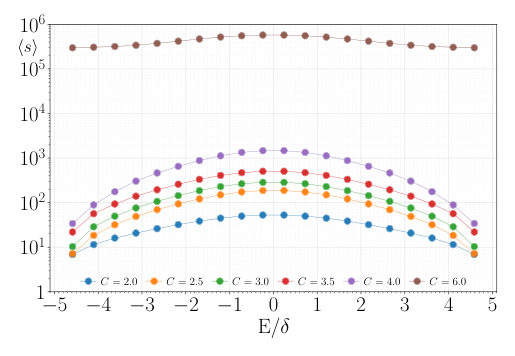
<figcaption class="paper-figure-caption"><b>Fig 2.</b> FIG. 2. Mean reachable cluster size ⟨s⟩as a function of the quantum register state energy E for fixed A = 0.3 and differ- ent interaction strengths: C = 2 (•), C = 2.5 (•), C = 3 (•), C = 3.5 (•), C = 4 (•), and C = 6 (•). The data correspond to the central noninteracting band (total spin Sz = 0) of a quantum register network with nq = 24 qubits. The band is divided into 20 energy bins, and the average cluster size ⟨s⟩is computed over all quantum register states belonging to each bin. The lines are drawn only as guides to the eye.</figcaption>
</figure>
<figure class="paper-figure-card">
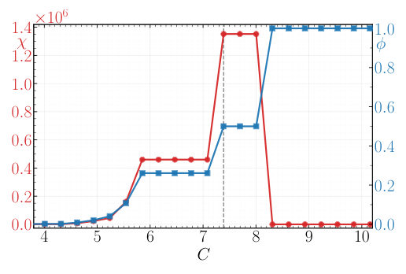
<figcaption class="paper-figure-caption"><b>Fig 3.</b> FIG. 4. Giant connected component fraction ϕ and suscepti- bility χ as a function of the coupling constant C for an ˚Aberg criterion A = 0.3. The quantum register network corresponds to the central noninteracting band of a quantum computer with nq = 24 qubits. The percolation threshold is estimated as Cc ≃7.4, corresponding to the smallest value of C for which χ reaches its maximum.</figcaption>
</figure>
<figure class="paper-figure-card">
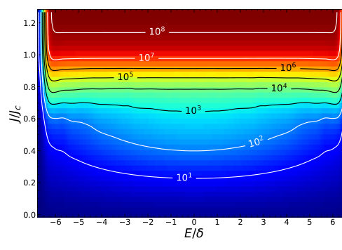
<figcaption class="paper-figure-caption"><b>Fig 4.</b> FIG. 3. Melting of the quantum computer core for nq = 5 × 6 = 30 qubits. Color scale represents the logarithm of the mean reachable cluster size ⟨s⟩varying from dark blue (log10 ⟨s⟩= 0), which represents clusters of size 1, to deep red (log10 ⟨s⟩∼8) which represents clusters of size above 108 (total Hilbert size is 155 117 520). Horizontal axis is the central band energy E/δ. Vertical axis is the value of J/Jc, where Jc is the critical coupling J for which a giant component of the ˚Aberg network contains at least half of all the quantum register states, here Jc ≃0.42 δ. See Fig. S3 and Fig. S4 for critical values for other system sizes and the scaling of Cc vs nq. Results are shown for the...</figcaption>
</figure>
<figure class="paper-figure-card">
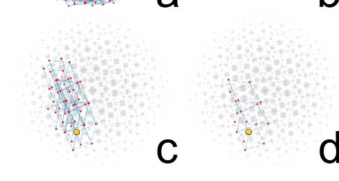
<figcaption class="paper-figure-caption"><b>Fig 5.</b> FIG. 5. Visualization of the connected cluster containing the Erd˝os quantum register (yellow node) in the quantum register network associated with the central noninteracting band of a quantum computer with nq = 16 qubits. The Erd˝os quantum register state is chosen as the one whose energy is closest to zero. The coupling constant is fixed at C = 4. Panels (a)–(d) show the evolution of this cluster as the ˚Aberg criterion in- creases A = 0.1, 0.26, 0.3, and 0.5, respectively. Quantum register states belonging to the connected cluster are shown as red nodes, whereas all other quantum register states are shown in gray. Interactions between quantum register states within the cluster are...</figcaption>
</figure>
</div>

<p><strong>Summary.</strong> This work analyzes the connectivity structure of a quantum computer's state space by modeling it as a network. By applying graph theory concepts, particularly percolation analysis using an $\acute{A}$berg criterion, the authors show that the transition to chaotic thermalization can be predicted by observing when this network forms a giant connected component. This offers a scalable alternative to computationally intensive methods for studying quantum many-body dynamics.</p>
<p><strong>Why it may be interesting.</strong> It provides a powerful, computationally tractable graph-theoretic tool (the $\acute{A}$berg criterion) to locate the onset of complex many-body physics like quantum chaos, which is usually reserved for costly exact diagonalization methods.</p>
<details>
<summary>Detailed structure</summary>
<p><strong>Main problem.</strong> To investigate if the network of quantum register states exhibits small-world properties and how these properties relate to key physical transitions like quantum chaos and dynamical thermalization.</p>
<p><strong>Main result.</strong> The effective $\acute{A}$berg network percolates into a giant component above a critical coupling strength, which successfully marks the onset of many-body quantum chaos and thermalization without expensive exact diagonalization.</p>
<p><strong>Method.</strong> The study uses graph theory metrics (small-world properties, percolation analysis) applied to an effective network defined by retaining interactions exceeding a local energy spacing ($\acute{A}$berg criterion).</p>
<p><strong>Model / system.</strong> The system is a quantum computer hardware modeled by $n_q$ qubits on a lattice, governed by a Hamiltonian with random couplings. The connectivity analysis focuses on the resulting state-space network.</p>
<p><strong>Key observables.</strong> Small-world properties (Erdős number), percolation transition ($\phi$, $\chi$), and mean reachable cluster size ($\langle s \rangle$).</p>
<p><strong>Important parameters / regimes.</strong> Critical coupling strength ($J_c$ or $C_c$), the $\acute{A}$berg parameter ($A$), and system size ($n_q$).</p>
<p><strong>Assumptions / limitations.</strong> The analysis relies on approximating the complex quantum dynamics using a simplified, effective network structure defined by the $\acute{A}$berg criterion.</p>
<p><strong>Figures summary.</strong> Figures illustrate the distribution of Erdős numbers, the growth of mean reachable cluster size ($\langle s \rangle$) indicating chaos onset, and linear fits showing the critical coupling $C_c$ scales linearly with $n_q$.</p>
<p><strong>Paper structure.</strong> The paper establishes the physical model, introduces the $\acute{A}$berg network construction, analyzes small-world metrics, determines the percolation transition point by comparing cluster growth to known chaos markers, and concludes by relating this structural boundary to quantum thermalization.</p>
</details>
<details>
<summary>Abstract</summary>
<p>We show that the network of quantum register states of a quantum computer (QC), coupled through residual two-body interactions between qubits, exhibits small-world properties analogous to those of complex networks found in human society. The most probable Erdős number between any two states is about 9, comparable to the six degrees of separation reported by Milgram for social networks. Using the $\mathring{A}$berg criterion, which retains only interactions exceeding the local energy spacing, we construct an effective ($\mathring{A}$berg) network and show that, above a critical coupling strength, this network percolates into a giant component spanning nearly the whole quantum register space. This percolation transition closely matches the onset of quantum chaos and dynamical thermalization established previously via costly exact diagonalization, while our approach extends the accessible system size up to $n_q=30$ qubits.</p>
</details>
<p><sub><a href="#top">↑ back to top</a></sub></p>

<p><a id="paper-2608.13811"></a></p>
<h3 id="strong-photoresponse-of-edge-two-dimensional-electrons-in-a-magnetic-field"><a href="http://arxiv.org/abs/2608.13811v1">Strong photoresponse of edge two-dimensional electrons in a magnetic field</a></h3>
<p><strong>Authors:</strong> Sergey A. Mikhailov, Wladislaw Michailow<br>
<strong>Type:</strong> theory · <strong>Category:</strong> other · <strong>PDF:</strong> <a href="https://arxiv.org/pdf/2608.13811v1">https://arxiv.org/pdf/2608.13811v1</a><br>
<strong>Analysis basis:</strong> full PDF text, analyzed in chunks
<strong>Topic relevance:</strong> <code>Keldysh / 2PI / non-Gaussian methods</code> <strong>2/5</strong> · <code>quantum measurements</code> <strong>2/5</strong> · <code>driven-dissipative phase transition</code> <strong>1/5</strong> · <code>methods for driven-dissipative</code> <strong>1/5</strong></p>
<div class="figure-strip-hint">↔ Scroll figures horizontally</div>
<div class="paper-figures-scroll">
<figure class="paper-figure-card">
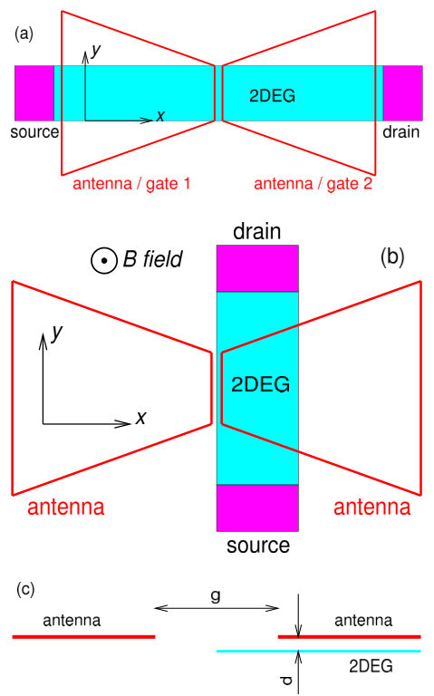
<figcaption class="paper-figure-caption"><b>Fig 1.</b> FIG. 1. The geometry (a) of the IPPE experiment and (b,c) of the experiment in the magnetic field proposed</figcaption>
</figure>
<figure class="paper-figure-card">
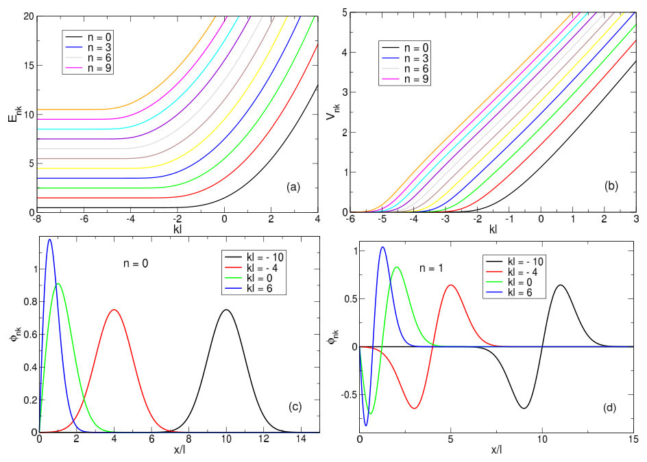
<figcaption class="paper-figure-caption"><b>Fig 2.</b> FIG. 2. (a) The spectrum of electrons Enk, in units ℏωc, and (b) their velocity (dEnk/dk)/ℏ, in units lωc,</figcaption>
</figure>
<figure class="paper-figure-card">
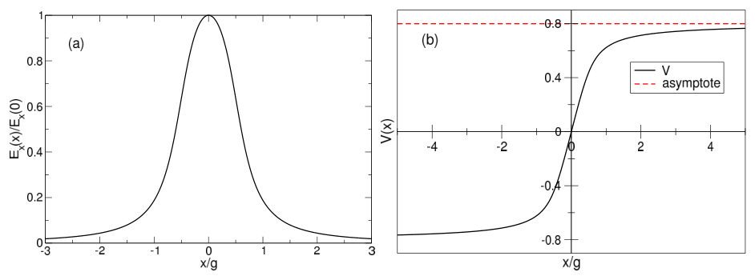
<figcaption class="paper-figure-caption"><b>Fig 3.</b> FIG. 3. (a) The model ac electric field (32) and (b) the corresponding potential energy (33) in the gap</figcaption>
</figure>
<figure class="paper-figure-card">
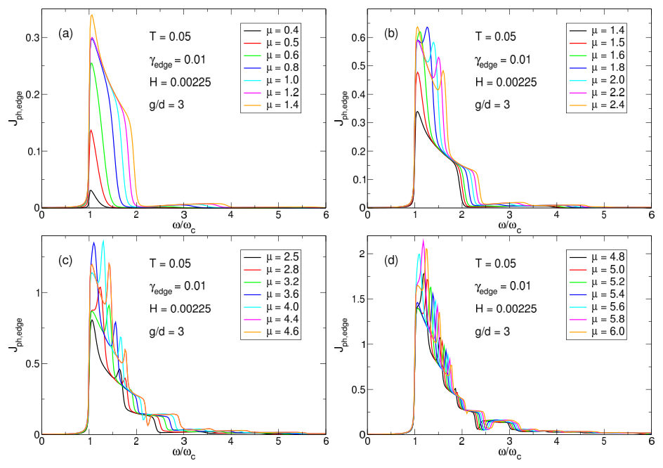
<figcaption class="paper-figure-caption"><b>Fig 4.</b> FIG. 4. (a)–(d) The photocurrent factor Jph,edge defined in Eq. (39) as a function of frequency ω/ωc at</figcaption>
</figure>
<figure class="paper-figure-card">
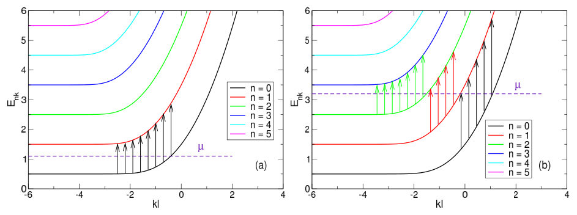
<figcaption class="paper-figure-caption"><b>Fig 5.</b> FIG. 5. The vertical transitions between the nearest Landau levels n →n + 1 for (a) µ/ℏωc = 1.1 and (b)</figcaption>
</figure>
</div>

<p><strong>Summary.</strong> The paper develops a quantum theory demonstrating that edge electrons in 2DES under a magnetic field can exhibit a strong photoresponse to incident THz radiation. By analyzing the interaction with Edge Magnetoplasmons (EMPs), it proposes a highly efficient mechanism for sensitive radiation detection, particularly favoring III-V semiconductors over graphene.</p>
<p><strong>Why it may be interesting.</strong> This work provides a concrete quantum electrodynamics framework for designing highly sensitive THz detectors using solid-state systems, bridging concepts from quantum optics and condensed matter transport theory.</p>
<details>
<summary>Detailed structure</summary>
<p><strong>Main problem.</strong> To develop a detailed quantum theory for the photocurrent generated by incident electromagnetic radiation in edge two-dimensional electron systems (2DES) under a perpendicular magnetic field.</p>
<p><strong>Main result.</strong> The strong photoresponse is predicted to arise from edge magnetoplasmons interacting with THz radiation, yielding efficiencies orders of magnitude higher than those predicted by standard plasmonic mixing theories or observed in graphene.</p>
<p><strong>Method.</strong> The theory uses a quantum mechanical approach involving the density matrix and perturbation expansion to calculate current response based on electron eigenstates derived from the Hamiltonian.</p>
<p><strong>Model / system.</strong> The system is a 2DEG confined to an edge geometry within a Hall bar setup, subjected to an out-of-plane magnetic field B. The physics is governed by Landau quantization leading to Edge Magnetoplasmons (EMPs).</p>
<p><strong>Key observables.</strong> Photocurrent magnitude and photoresponse efficiency ($I(0)/S$), resonance frequencies ($\omega_{mp}$), and the dependence on incident microwave/THz frequency.</p>
<p><strong>Important parameters / regimes.</strong> Magnetic field strength (B), Fermi energy ($\mu$), photon frequency ($\omega$), and material type (e.g., III-V semiconductors vs. graphene).</p>
<p><strong>Assumptions / limitations.</strong> The theory assumes that strong photoresponse is achieved via radiation confinement structures, and it models the system using a master equation approach while neglecting Coulomb interaction effects near the edge.</p>
<p><strong>Figures summary.</strong> Figure 1 illustrates the geometry for both In-Plane Photoelectric Effect (IPPE) experiments and the proposed setup in a magnetic field. Figure 2 shows the energy spectrum and eigenfunctions of the confined electrons, highlighting bending upwards near the edge.</p>
<p><strong>Paper structure.</strong> The paper builds from background context on plasmons to introducing the IPPE mechanism, then extends this theory by incorporating an external magnetic field to focus on low-damping Edge Magnetoplasmons (EMPs) as the primary detection pathway.</p>
</details>
<details>
<summary>Abstract</summary>
<p>Electrons in two-dimensional electron gases in the presence of an out-of-plane magnetic field propagate along the edge with a high velocity of the order of the Fermi velocity. Under microwave and terahertz radiation, photon absorption by these electrons provides a pathway to realising sensitive radiation detection. Here, we develop a detailed quantum theory of the photocurrent generated in such a system by an incident electromagnetic wave and propose an experimental geometry for observing the predicted phenomenon. By using suitably arranged radiation confinement structures, a strong photocurrent generation efficiency can be obtained. We also demonstrate that the resulting photoresponse in III-V semiconductor structures can be orders of magnitude higher than that measured in graphene.</p>
</details>
<p><sub><a href="#top">↑ back to top</a></sub></p>

<p><a id="paper-2608.14083"></a></p>
<h3 id="information-calibrated-quantum-diffusion-aligning-forward-noise-with-reverse-recoverability"><a href="http://arxiv.org/abs/2608.14083v1">Information-Calibrated Quantum Diffusion: Aligning Forward Noise with Reverse Recoverability</a></h3>
<p><strong>Authors:</strong> Qipeng Qian, Yuntao Qian<br>
<strong>Type:</strong> theory · <strong>Category:</strong> quantum information and computing · <strong>PDF:</strong> <a href="https://arxiv.org/pdf/2608.14083v1">https://arxiv.org/pdf/2608.14083v1</a><br>
<strong>Analysis basis:</strong> full PDF text, analyzed in chunks
<strong>Topic relevance:</strong> <code>driven-dissipative phase transition</code> <strong>2/5</strong> · <code>correlated / nonlocal dissipation</code> <strong>1/5</strong> · <code>quantum measurements</code> <strong>1/5</strong></p>
<div class="figure-strip-hint">↔ Scroll figures horizontally</div>
<div class="paper-figures-scroll">
<figure class="paper-figure-card">
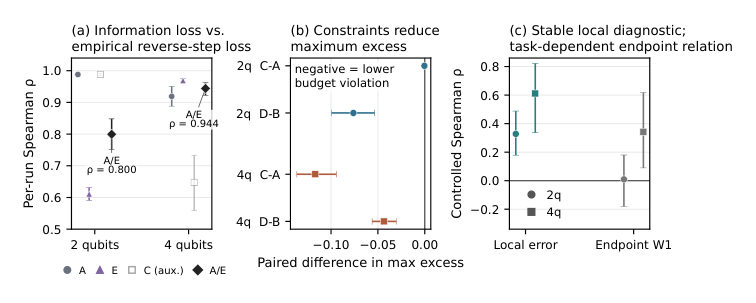
<figcaption class="paper-figure-caption"><b>Fig 1.</b> Figure 1: Cross-scale calibration mechanism. (a) Information-loss alignment on unconstrained A/E runs. (b) Budget enforcement reduces maximum excess. (c) Excess remains associated with local error, whereas its endpoint association is task-dependent.</figcaption>
</figure>
<figure class="paper-figure-card">
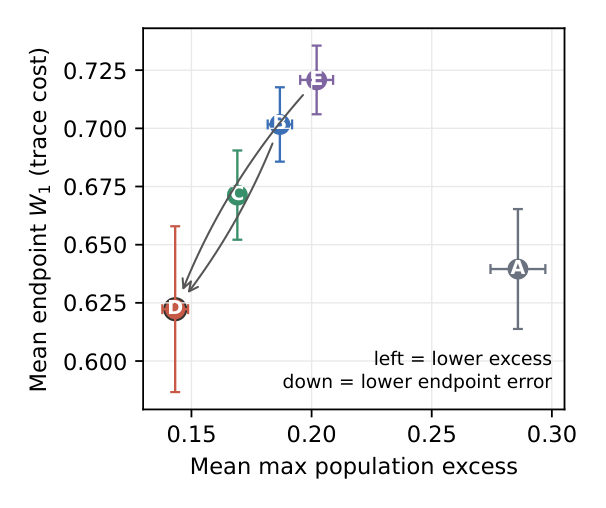
<figcaption class="paper-figure-caption"><b>Fig 2.</b> Figure 2: Primary four-qubit calibration–generation comparison. Lower maximum excess is better to the left and lower endpoint W1,tr is better downward. D has the lowest mean excess and endpoint error among the five variants.</figcaption>
</figure>
<figure class="paper-figure-card">
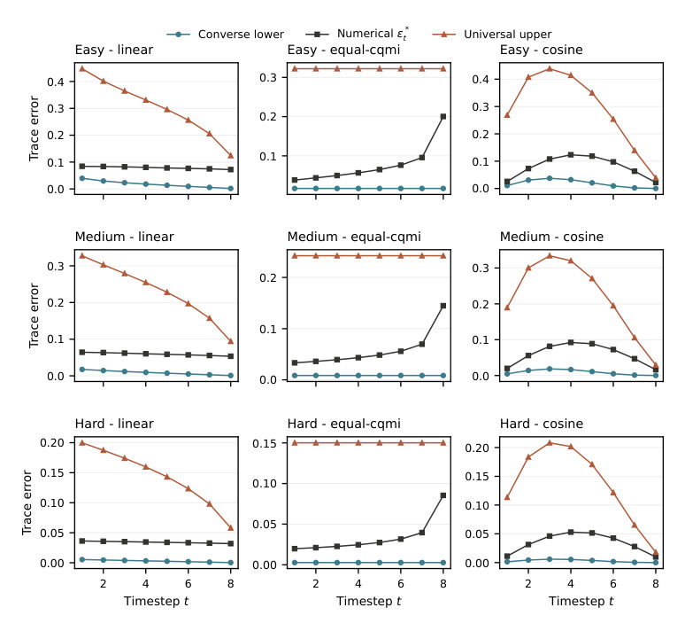
<figcaption class="paper-figure-caption"><b>Fig 3.</b> Figure 3: Numerical two-qubit continuity-recovery sandwich. The Holevo-continuity lower bound, numerical common-channel optimum, and universal upper bound are shown for nine de- duplicated target/grid objects.</figcaption>
</figure>
<figure class="paper-figure-card">
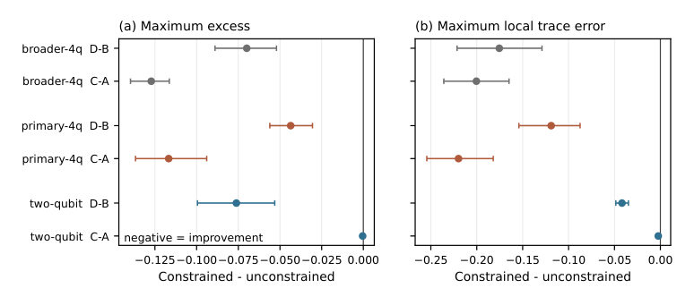
<figcaption class="paper-figure-caption"><b>Fig 4.</b> Figure 4: Constraint effects on the defining residual and a non-optimized local outcome. Negative values indicate improvement.</figcaption>
</figure>
<figure class="paper-figure-card">
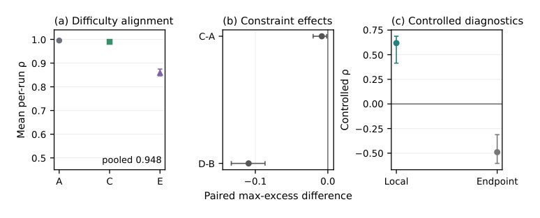
<figcaption class="paper-figure-caption"><b>Fig 5.</b> Figure 5: Additional one-qubit sanity checks. The one-qubit subset reproduces the calibration mechanism: strong information–loss alignment and reduced excess under the constraints. These runs are reported separately from the main two-/four-qubit statistics.</figcaption>
</figure>
</div>

<p><strong>Summary.</strong> The paper proposes an information-calibrated approach to quantum diffusion models where the forward noise process is governed by the intrinsic rate of information loss ($\Delta t$). This $\Delta t$ simultaneously dictates the optimal noise schedule and sets a quantifiable budget for how well the reverse recovery channel can reconstruct the state. By showing that local fidelity matching is insufficient, they introduce global distribution control methods, achieving superior performance on quantum simulation benchmarks.</p>
<p><strong>Why it may be interesting.</strong> This work provides a rigorous information-theoretic constraint for designing quantum generative models, moving beyond simple channel parameterizations by tying noise corruption directly to measurable physical quantities like mutual information loss.</p>
<details>
<summary>Detailed structure</summary>
<p><strong>Main problem.</strong> To develop an 'information-calibrated' quantum diffusion model that parameterizes forward noise corruption using intrinsic information loss rather than raw channel strength.</p>
<p><strong>Main result.</strong> The information decrement $\Delta t$ serves as a unique, common coordinate for both the forward noise schedule and the attainable expected log-fidelity budget for the reverse recovery process.</p>
<p><strong>Method.</strong> The authors introduce the classical--quantum information decrement $\Delta t = I(X:Q_{t-1}) - I(X:Q_t)$ to govern the diffusion path, establishing theoretical bounds linking this information loss to achievable quantum state recovery fidelity.</p>
<p><strong>Model / system.</strong> The analysis is performed on quantum ensembles $\{p_x, 
ho_x\}$ evolving via depolarization along a general Hilbert space. The framework extends to noncommuting two-qubit systems and is tested on four-qubit TFIM circuits.</p>
<p><strong>Key observables.</strong> Classical--quantum information decrement ($\Delta t$), root fidelity ($   ext{Fr}$), trace distance ($  ext{dtr}$), and the trace-cost Wasserstein distance ($W_{1,    ext{tr}}$).</p>
<p><strong>Important parameters / regimes.</strong> The diffusion time steps $t$, the number of qubits (e.g., four-qubit TFIM), and the trainable parameters defining the recovery channel.</p>
<p><strong>Assumptions / limitations.</strong> Local calibration is fundamentally insufficient for stochastic generation, necessitating a global control mechanism based on distribution matching and theorem-scaled recovery constraints.</p>
<p><strong>Figures summary.</strong> The notes refer to comparisons of $W_{1,	ext{tr}}$ across different model depths (Depth 8 vs. Depth 128) showing improved performance with more expressive shared channels, and tables comparing calibration mechanisms.</p>
<p><strong>Paper structure.</strong> The paper establishes the information-theoretic foundation ($\Delta t$ as coordinate), proves its equivalence to recovery budgets (Theorem 2), demonstrates the separation between local fidelity and global coverage (Theorem 6), and applies this framework to improve generative models on specific quantum hardware simulations (TFIM).</p>
</details>
<details>
<summary>Abstract</summary>
<p>Quantum diffusion models typically parameterize forward corruption by raw channel strength, even though equal parameter increments need not erase equal information or induce comparable inverse problems. We introduce the classical--quantum information decrement $Δ_t=I(X{:}Q_{t-1})-I(X{:}Q_t)$ as an intrinsic diffusion coordinate for labeled quantum ensembles. Along depolarization, equalizing $Δ_t$ yields the unique minimax discretization of the forward path, while universal recoverability gives the same quantity an operational reverse interpretation as an attainable expected log-fidelity budget for a label-independent CPTP recovery channel. Complementary continuity and pairwise-geometric converses lower-bound the optimal common-channel recovery error. We further show that local calibration is fundamentally insufficient for stochastic generation: even in a fixed noncommuting two-qubit system, identical local-fidelity laws and budget-feasible risks can coexist with macroscopically different output distributions. This motivates a stochastic learner combining theorem-scaled recovery constraints with distribution matching, for which we establish finite-sample calibration and compositional trace-Wasserstein control. On four-qubit TFIM, a controlled capacity extension reduces endpoint $\Wtr$ from $.622$ to $.424$ on all ten matched seeds and achieves lower $\Wtr$ than official QuDDPM ($.498$) with fewer trainable parameters.</p>
</details>
<p><sub><a href="#top">↑ back to top</a></sub></p>

<p><a id="paper-2608.13881"></a></p>
<h3 id="nonorthogonal-state-erasure-as-the-resource-behind-apparent-second-law-violations"><a href="http://arxiv.org/abs/2608.13881v1">Nonorthogonal-state erasure as the resource behind apparent second-law violations</a></h3>
<p><strong>Authors:</strong> Xinshu Xia, Hui Hui Qin, Yu-Han Ma, Chang-Pu Sun, Hui Dong<br>
<strong>Type:</strong> theory · <strong>Category:</strong> statistical mechanics · <strong>PDF:</strong> <a href="https://arxiv.org/pdf/2608.13881v1">https://arxiv.org/pdf/2608.13881v1</a><br>
<strong>Analysis basis:</strong> full PDF text, analyzed in chunks
<strong>Topic relevance:</strong> <code>quantum measurements</code> <strong>2/5</strong> · <code>Keldysh / 2PI / non-Gaussian methods</code> <strong>1/5</strong> · <code>correlated / nonlocal dissipation</code> <strong>1/5</strong></p>
<div class="figure-strip-hint">↔ Scroll figures horizontally</div>
<div class="paper-figures-scroll">
<figure class="paper-figure-card">
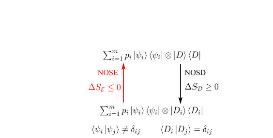
<figcaption class="paper-figure-caption"><b>Fig 1.</b> Figure 1. The relation between entropy change and non- orthogonal state distinguishing (erasure). NOSD(E): Non- orthogonal-state distinguishing (erasure).</figcaption>
</figure>
<figure class="paper-figure-card">
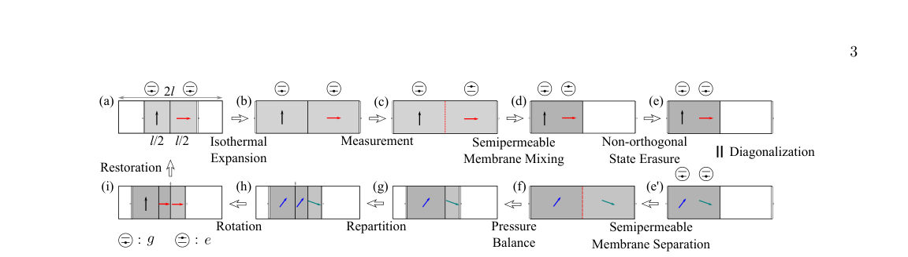
<figcaption class="paper-figure-caption"><b>Fig 2.</b> Figure 2. Modified Peres’ model of the second law violation with non-orthogonal erasure. (a) The initial state of the setup. A single spin-1/2 atom with spin states |↑⟩and |→⟩is trapped in a one-dimension chamber with equal probability in the left and right compartments, illustrated as gray regions. A single register with initial state |g⟩is included as the memory for the measurement to avoid any Maxwell-demon type second law violation. (a→b) Isothermal expansion. The pistons on the two sides are moved to double the widths. (b→c) Measurement. The register state is flipped to its excited state |e⟩if the single atom is in the right compartment, and remains on the ground state if the atom is...</figcaption>
</figure>
</div>

<p><strong>Summary.</strong> The paper re-evaluates apparent violations of the second law arising from nonorthogonal quantum states. It proves that the true resource is not state distinguishability but its inverse operation, nonorthogonal-state erasure (NOSE). By analyzing a modified Szilard engine, it shows that any extracted work must be paid for by the thermodynamic cost associated with performing this NOSE.</p>
<p><strong>Why it may be interesting.</strong> This work directly addresses fundamental thermodynamic constraints in quantum mechanics, providing a rigorous framework for identifying which physical operations constitute genuine free energy resources versus those that merely mask underlying entropy costs.</p>
<details>
<summary>Detailed structure</summary>
<p><strong>Main problem.</strong> The paper investigates the resource underlying apparent violations of the second law of thermodynamics when nonorthogonal quantum states are involved.</p>
<p><strong>Main result.</strong> It proves that the apparent work extraction is supplied not by nonorthogonal-state distinguishing, but by a thermodynamic cost associated with the inverse process: nonorthogonal-state erasure (NOSE).</p>
<p><strong>Method.</strong> The analysis compares entropy changes ($\Delta S$) for state distinguishing versus its inverse operation (erasure), applying these concepts to reanalyze a Peres-type Szilard engine.</p>
<p><strong>Model / system.</strong> The core model is the theoretical framework of nonorthogonal quantum state manipulation, applied specifically to an idealized Peres-type Szilard engine involving spin states and spatial degrees of freedom.</p>
<p><strong>Key observables.</strong> Joint entropy change ($\Delta S$), extracted work ($W_{\mathrm{ext}}$), and the thermodynamic cost associated with erasure ($W_{cost}$).</p>
<p><strong>Important parameters / regimes.</strong> Temperature ($T$) and Boltzmann constant ($k_B$); for the engine, initial/final box sizes ($l_1, l_2$).</p>
<p><strong>Assumptions / limitations.</strong> The analysis assumes that any entropy-decreasing resource must be paid for by a corresponding thermodynamic cost.</p>
<p><strong>Figures summary.</strong> Figure 1 illustrates the relationship between entropy change and nonorthogonal state distinguishing versus erasure. Figure 2 details the modified Peres' engine cycle, explicitly including the Non-orthogonal State Erasure step.</p>
<p><strong>Paper structure.</strong> The paper first establishes that deterministic distinguishing of nonorthogonal states increases joint entropy ($\Delta S_{Dist} \ge 0$). It then identifies the inverse process, NOSE, as the true entropy-decreasing resource. Finally, it applies this understanding to reanalyze a Peres-type Szilard engine cycle, showing the work extraction is balanced by the cost of NOSE.</p>
</details>
<details>
<summary>Abstract</summary>
<p>Perfect deterministic distinguishing of nonorthogonal quantum states is forbidden by the linear and unitary structure of quantum mechanics. It has often been assumed that, if such distinguishing were available, it would be the resource enabling work extraction from a single heat bath. We show that this expectation identifies the wrong thermodynamic operation and prove such hypothetical operation increases, rather than decreases, the joint entropy of system and detector. The entropy-decreasing resource is instead the inverse operation, which we call nonorthogonal-state erasure. Reanalyzing a Peres-type Szilard engine, we show that the apparent extracted work $W_{\mathrm{ext}}=0.2766k_{\mathrm{B}}T$ for an equal mixture of an atomic ensemble with spin state $\left|\uparrow\right\rangle $ and $\left|\rightarrow\right\rangle $. Thus the apparent second-law violation is supplied not by nonorthogonal-state distinguishing, but by a nonorthogonal quantum state erasure.</p>
</details>
<p><sub><a href="#top">↑ back to top</a></sub></p>

<p><a id="paper-2608.14133"></a></p>
<h3 id="a-groupoidal-approach-to-quantum-reference-frames"><a href="http://arxiv.org/abs/2608.14133v1">A groupoidal approach to quantum reference frames</a></h3>
<p><strong>Authors:</strong> Samuel Fedida, Alberto Ibort, Arnau Mas-Dorca<br>
<strong>Type:</strong> theory · <strong>Category:</strong> other · <strong>PDF:</strong> <a href="https://arxiv.org/pdf/2608.14133v1">https://arxiv.org/pdf/2608.14133v1</a><br>
<strong>Analysis basis:</strong> full PDF text, analyzed in chunks
<strong>Topic relevance:</strong> <code>quantum measurements</code> <strong>2/5</strong> · <code>Keldysh / 2PI / non-Gaussian methods</code> <strong>1/5</strong></p>
<div class="figure-strip-hint">↔ Scroll figures horizontally</div>
<div class="paper-figures-scroll">
<figure class="paper-figure-card">
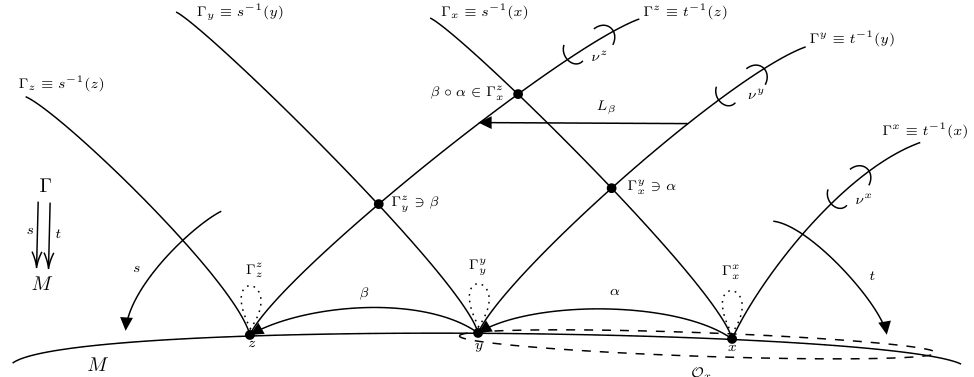
<figcaption class="paper-figure-caption"><b>Fig 1.</b> Figure 2: The groupoid Γ ⇒M, its arrows and associated spaces. When endowed with a continuous left Haar system ν = {νx}x∈M, we have that νx : Bor(Γx) →[0, ∞] takes Borel subsets of the target fiber Γx.</figcaption>
</figure>
<figure class="paper-figure-card">
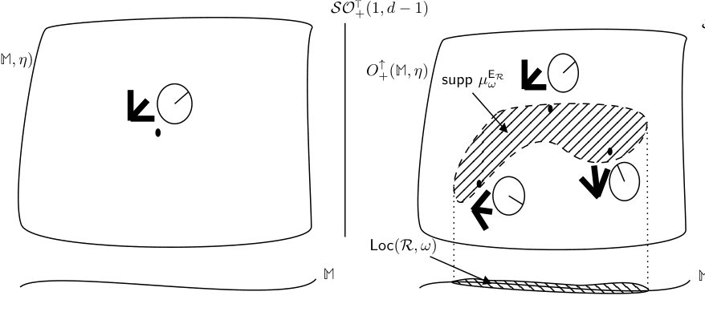
<figcaption class="paper-figure-caption"><b>Fig 2.</b> Figure 3: Space of inertial frames for which every point represent a different viewpoint from which physical systems can be described. A classical inertial reference frame can be thought of as a Dirac delta distribution over this space, while an oriented relativistic quantum reference frame gives a Born probability distribution over it. The measure projected to M is a Born probability measure of the marginal POVM FR.</figcaption>
</figure>
<figure class="paper-figure-card">
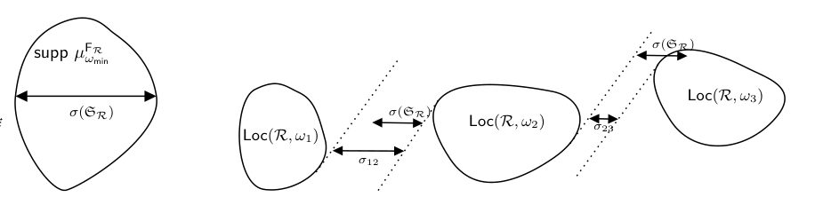
<figcaption class="paper-figure-caption"><b>Fig 3.</b> Figure 4: Pictorial representations of the frame resolutions and of σ(SR)-spacelike separation of regions in flat spacetime [22].</figcaption>
</figure>
<figure class="paper-figure-card">
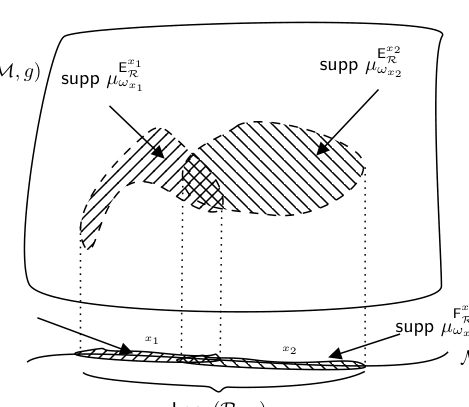
<figcaption class="paper-figure-caption"><b>Fig 4.</b> Figure 5: Spacetime localization of the QRF (given a measurable projection π) prepared in state ω = (ωx) ∈S (HR) as the union of the spacetime localization of the preparations at different x ∈M of the QRF. Here, only two frame ωx1 and ωx2 are displayed, and for a single ω = (ωx), for clarity of the representation.</figcaption>
</figure>
<figure class="paper-figure-card">

<figcaption class="paper-figure-caption"><b>Fig 5.</b> Figure 6: Pictorial representations of the frame resolutions and of σ(SR, π)-spacelike separation of regions on curved spacetime.</figcaption>
</figure>
</div>

<p><strong>Summary.</strong> This paper introduces a novel groupoid-based framework to construct Quantum Reference Frames (QRFs) and Relational Quantum Field Theories (RQFT) applicable on curved spacetimes. It overcomes the limitations of traditional group-based methods by replacing symmetry groups with appropriate spacetime groupoids, including the Poincaré groupoid and Atiyah groupoids for gauge theories. This provides a mathematically rigorous path toward formulating quantum physics in general relativistic settings.</p>
<p><strong>Why it may be interesting.</strong> This work provides a powerful mathematical generalization of quantum field theory that is crucial for modern research in general relativity and quantum gravity, where local structures dominate over global symmetries.</p>
<details>
<summary>Detailed structure</summary>
<p><strong>Main problem.</strong> The primary challenge is developing a rigorous quantum field theory framework for curved spacetimes where standard global symmetry groups are unavailable, necessitating the use of groupoids.</p>
<p><strong>Main result.</strong> The authors establish a comprehensive groupoid-based formalism for Quantum Reference Frames (QRFs) and Relational Quantum Field Theory (RQFT), successfully extending concepts from Minkowski spacetime to general curved backgrounds.</p>
<p><strong>Method.</strong> The approach involves developing kinematical and operator-algebraic foundations using continuous groupoids, replacing the standard Poincaré group with the appropriate spacetime groupoid structure.</p>
<p><strong>Model / system.</strong> The theory applies to quantum fields on generic curved Lorentzian spacetimes $(M, g)$, utilizing mathematical structures like groupoids (Poincaré groupoid, Atiyah groupoid) to encode local symmetries where global ones fail.</p>
<p><strong>Key observables.</strong> Relational observables, covariant POVMs, and the structure of relational gauge-covariant quantum field theories.</p>
<p><strong>Important parameters / regimes.</strong> Curved spacetime metric $g$, quasi-invariant $\sigma$-finite positive Borel measures $\mu$, and the groupoid structure itself.</p>
<p><strong>Assumptions / limitations.</strong> The formalism assumes that when global symmetries fail, the appropriate mathematical generalization is provided by a continuous groupoid structure.</p>
<p><strong>Paper structure.</strong> The paper reviews RQFT foundations in Minkowski spacetime (linking to Wightman QFT) before developing the core groupoidal framework. It then applies this machinery to curved spacetimes, extending the formalism to include internal gauge symmetries via Atiyah groupoids.</p>
</details>
<details>
<summary>Abstract</summary>
<p>We develop the kinematical and operator-algebraic foundations of a groupoid-based relational quantum field theory (RQFT) on curved spacetimes. Indeed, the usual group-based quantum reference frame (QRF) formalism is not directly suited to generic curved Lorentzian backgrounds as global symmetry groups are typically absent or too small. We formulate a notion of QRF for a continuous groupoid. This yields a groupoid relativization map and relational observables. We show that a localization limit recovers the ordinary non-relational description. We construct canonical sharp groupoid QRFs, which form the groupoidal counterpart of the ideal group QRFs based on $L^2(G)$. We further prove that the groupoid QRF construction reduces to the standard operational QRF formalism for locally compact groups. The action groupoid QRFs are torsor QRFs only for specific classes of fields of positive operator-valued measures (POVMs), and the torsor relativization map only applies to constant operator fields of system observables.   We review the foundations of RQFT in Minkowski spacetime. We prove new results that further link RQFT to Wightman QFT. We show that covariant POVMs are $μ$-continuous with respect to quasi-invariant $σ$-finite positive Borel measures $μ$. Thus, relational quantum fields can be understood as the smearing of pointwise-defined kernels with respect to the QRF's statistics. We develop RQFT in curved spacetime, where we argue that the correct replacement for the Poincaré group is the Poincaré groupoid of the spacetime. We also indicate how the framework extends further to internal gauge symmetry and relational gauge-covariant quantum field theory via Atiyah groupoids, providing a first step towards formulating a relational quantum Yang-Mills field theory.</p>
</details>
<p><sub><a href="#top">↑ back to top</a></sub></p>

<p><a id="paper-2608.14387"></a></p>
<h3 id="linearised-quantum-signal-processing"><a href="http://arxiv.org/abs/2608.14387v1">Linearised quantum signal processing</a></h3>
<p><strong>Authors:</strong> Marek Arsenault, Hlér Kristjánsson<br>
<strong>Type:</strong> theory · <strong>Category:</strong> quantum information and computing · <strong>PDF:</strong> <a href="https://arxiv.org/pdf/2608.14387v1">https://arxiv.org/pdf/2608.14387v1</a><br>
<strong>Analysis basis:</strong> full PDF text, analyzed in chunks
<strong>Topic relevance:</strong> <code>analog quantum simulation</code> <strong>2/5</strong> · <code>quantum measurements</code> <strong>1/5</strong></p>
<div class="figure-strip-hint">↔ Scroll figures horizontally</div>
<div class="paper-figures-scroll">
<figure class="paper-figure-card">

<figcaption class="paper-figure-caption"><b>Fig 1.</b> Figure 1: Conceptual “map” of the different functional programming schemes and their relations to harmonic analysis. We show that the Universal Hamiltonian Eigenvalue Transformation (UHET) [OKTM25] is a (randomised) linearised version of Generalised Quantum Signal Processing (GQSP) [MW24]. Using this understanding, we lift the intuition to construct a new quantum functional programming algorithm called Universal Hamiltonian Singular Value Transformation (UHSVT), which can be conceptualised as a linearisation of (the Hamiltonian formulation [LKA+; KS25] of) the Quantum Singular Value Transformation (QSVT) [GSLW19]. This linearisation mapping is analogous to that between the Fourier series...</figcaption>
</figure>
<figure class="paper-figure-card">

<figcaption class="paper-figure-caption"><b>Fig 2.</b> Figure 2: Two circuits for Hamiltonian simulation approximating the unitary channel associated to e−iHt. On the left is the standard first-order Trotter-Suzuki approach with a deterministic sequence. On the right is the qDRIFT circuit, where the unitary e−isign(αj)Hjt is randomly applied according to the distribution pj ∝|αj|, corresponding to the decomposition H = PL j=0 αjHj.</figcaption>
</figure>
<figure class="paper-figure-card">

<figcaption class="paper-figure-caption"><b>Fig 3.</b> Figure 3: Randomised (top) and deterministic (bottom) UHET algorithms for transforming the eigenvalues of a traceless black-box Hamiltonian H, given access to its controlled evolution operator ctrl0  e−iHτ for arbitrary time τ, via a sufficiently differentiable function f (here assumed periodic, for simplicity). Here ck = |ck|eiϕk and β = PK k=−K |ck|. The randomised algorithm proceeds by sampling the Fourier mode e−ikH of f according to a probability distribution determined by the size of the Fourier coefficients of f.</figcaption>
</figure>
<figure class="paper-figure-card">

<figcaption class="paper-figure-caption"><b>Fig 4.</b> Figure 5: Transformation from an XY-GQSP protocol with processing angles (Θ, Φ) to the UHET algorithm. Here, Rx(θ) := e−iθX = Rxy(θ, 0). The first step consists of rewriting the signal operator as ctrl0(U) −→ ctrl0(U −k+1) ctrl0(U k). Next, we take the small-angle approximation by rescaling the phase parameters Θ −→ Θt/N, with t/N ≪1, (linerisation) so that the sequence approaches a continuous time evolution via Trotterisation, which is equivalent to deterministic UHET (with controlled-Hamiltonian access). Finally, the resulting procedure is randomised using the qDRIFT protocol to obtain the original randomised UHET (with controlled-Hamiltonian access). (Note that for simplicity, in...</figcaption>
</figure>
<figure class="paper-figure-card">

<figcaption class="paper-figure-caption"><b>Fig 5.</b> Figure 6: Sine Fourier series simulation for the singular values of A block-encoded into a (control-free) Hamiltonian evolution H[A]. By choosing the frequency k ∈{1, 2, ..., K} and bit s ∈{0, 1} with probability pk,s related to the sine-Fourier coefficients of the odd extension ˜fodd of any sufficiently differentiable function f satisfying f(0) = 0, one can achieve a functional transformation A →fSV(A) of the singular values of A in the form of a truncated sine Fourier series up to order K. Note that the qubitised subspace HQ is not realised by any physical qubit, but the Z-rotations on this Hilbert space can be implemented with an additional auxiliary qubit, as shown in Figure 4.</figcaption>
</figure>
</div>

<p><strong>Summary.</strong> This paper advances the theory of quantum functional programming by connecting disparate algorithms like QSP and UHET. It introduces the Universal Hamiltonian Singular Value Transformation (UHSVT), an algorithm that efficiently computes functions of singular values encoded in a Hamiltonian using only black-box dynamics access. This overcomes limitations of prior methods by removing strict requirements on the system's spectrum or available gates.</p>
<p><strong>Why it may be interesting.</strong> This work provides powerful algorithmic tools (UHSVT) that generalize existing quantum simulation techniques by relaxing restrictive assumptions (like requiring specific gate sets or bounds on eigenvalues), making them applicable to a wider range of physical Hamiltonians in black-box settings.</p>
<details>
<summary>Detailed structure</summary>
<p><strong>Main problem.</strong> The primary goal is to develop a complete theory of quantum functional programming by establishing structural connections between various advanced quantum algorithms like QSP and UHET.</p>
<p><strong>Main result.</strong> The authors establish that the Universal Hamiltonian Eigenvalue Transformation (UHET) can be interpreted as a linearisation of Generalised QSP (GQSP), leading to the introduction of UHSVT for black-box singular value transformations.</p>
<p><strong>Method.</strong> The work employs structural analysis and linearization techniques, building upon Quantum Signal Processing (QSP) frameworks to derive new algorithms applicable in restricted computational settings.</p>
<p><strong>Model / system.</strong> The focus is on quantum computation involving functional transformations of matrices encoded within the dynamics of a Hamiltonian ($H$), accessible as a black box. The core mathematical tools involve QSP, QSVT, and UHET.</p>
<p><strong>Key observables.</strong> Functional transformations of singular values ($   ext{A}$) or eigenvalues ($H$); approximation error ($\epsilon$).</p>
<p><strong>Important parameters / regimes.</strong> The function $f$ used for transformation (requiring $f(0)=0$ for UHSVT); the desired accuracy $\epsilon$.</p>
<p><strong>Assumptions / limitations.</strong> Previous QSVT methods often required either a lower bound on singular values or X-rotation gates, which UHSVT overcomes by operating in a true black-box setting.</p>
<p><strong>Figures summary.</strong> Figure 1 conceptually maps the relationships between functional programming schemes (e.g., UHET $\approx$ linearisation of GQSP; UHSVT $\approx$ linearisation of QSVT).</p>
<p><strong>Paper structure.</strong> The paper first establishes the structural link between UHET and GQSP, then builds upon this to introduce UHSVT as a generalized, black-box method for singular value transformation. Subsequent sections detail the polynomial approximations required for implementing H-QSVT.</p>
</details>
<details>
<summary>Abstract</summary>
<p>Quantum functional programming has been developed through two distinct paradigms in the last few years: Quantum Signal Processing (QSP)-based methods, including the Quantum Singular Value Transformation (QSVT), and methods based on higher-order quantum transformations, such as the Universal Hamiltonian Eigenvalue Transformation (UHET). While UHET performs functional transformations of Hamiltonian dynamics, its relationship to QSP-based techniques has remained unclear despite evident structural similarities. In this work, we resolve this gap by establishing a connection between UHET and QSP-based frameworks; specifically, we show that UHET can be interpreted as a (randomised) linearisation of Generalised QSP (GQSP). Building on this result, we introduce a linearised variant of (Hamiltonian-based) QSVT, which we call Universal Hamiltonian Singular Value Transformation (UHSVT), that enables the efficient transformation of the singular values of any arbitrary matrix $A$ encoded in a block of a Hamiltonian, whose dynamics is accessible as a black box, by any sufficiently differentiable complex-valued function $f$. Our algorithm requires the sole condition that $f$ vanishes at the origin, in contrast to previous QSVT-based approaches that assumed either a lower bound on the singular values of $A$ or the ability to perform $X$-rotation gates on the induced two-dimensional 'qubitised' subspace.</p>
</details>
<p><sub><a href="#top">↑ back to top</a></sub></p>

<p><a id="paper-2608.14134"></a></p>
<h3 id="photonic-quantum-computing-vs-classical-solvers-in-constrained-factor-portfolio-optimization"><a href="http://arxiv.org/abs/2608.14134v1">Photonic Quantum Computing vs. Classical Solvers in Constrained Factor Portfolio Optimization</a></h3>
<p><strong>Authors:</strong> Nirvik Sahoo, Chyng Wen Tee, Paul Robert Griffin<br>
<strong>Type:</strong> experiment · <strong>Category:</strong> other · <strong>PDF:</strong> <a href="https://arxiv.org/pdf/2608.14134v1">https://arxiv.org/pdf/2608.14134v1</a><br>
<strong>Analysis basis:</strong> full PDF text, analyzed in chunks
<strong>Topic relevance:</strong> <code>analog quantum simulation</code> <strong>2/5</strong> · <code>QC/QI experiment</code> <strong>1/5</strong></p>
<div class="figure-strip-hint">↔ Scroll figures horizontally</div>
<div class="paper-figures-scroll">
<figure class="paper-figure-card">

<figcaption class="paper-figure-caption"><b>Fig 1.</b> Low-resolution page preview, page 2</figcaption>
</figure>
<figure class="paper-figure-card">

<figcaption class="paper-figure-caption"><b>Fig 2.</b> Low-resolution page preview, page 3</figcaption>
</figure>
<figure class="paper-figure-card">

<figcaption class="paper-figure-caption"><b>Fig 3.</b> Low-resolution page preview, page 4</figcaption>
</figure>
<figure class="paper-figure-card">

<figcaption class="paper-figure-caption"><b>Fig 4.</b> Low-resolution page preview, page 5</figcaption>
</figure>
<figure class="paper-figure-card">

<figcaption class="paper-figure-caption"><b>Fig 5.</b> Low-resolution page preview, page 6</figcaption>
</figure>
</div>

<p><strong>Summary.</strong> This paper empirically compares photonic quantum computing against classical and deep reinforcement learning methods for optimizing financial portfolios. It finds that while quantum annealers can achieve high peak performance, deterministic classical solvers provide superior stability and risk control necessary for real-world fiduciary mandates.</p>
<p><strong>Why it may be interesting.</strong> Although applied to finance, the core methodology involves mapping complex combinatorial optimization problems onto physical computational models (QUBO) for quantum annealing hardware, which is relevant to understanding resource constraints in quantum computation.</p>
<details>
<summary>Detailed structure</summary>
<p><strong>Main problem.</strong> The paper compares three optimization paradigms—photonic quantum annealing, classical MIP solving, and deep reinforcement learning—for constrained factor portfolio construction in institutional finance.</p>
<p><strong>Main result.</strong> While photonic hardware can achieve superior peak risk-return metrics under ideal calibration, the classical MIP solver remains superior for mandates requiring stable tail-risk control and cross-seed reliability.</p>
<p><strong>Method.</strong> The authors conducted a rigorous empirical evaluation across 48 hyperparameter configurations over a 164-month test window, comparing performance against established financial benchmarks.</p>
<p><strong>Model / system.</strong> The optimization problem is formulated as minimizing a QUBO (Quadratic Unconstrained Binary Optimization) derived from balancing expected return, volatility penalties ($eta_1$), and skewness incentives ($eta_2$). The platforms tested are the Dirac-3 photonic quantum annealer, Gurobi MIP solver, and SAC RL agent.</p>
<p><strong>Key observables.</strong> Sharpe ratio, Calmar ratio, Conditional Value-at-Risk (CVaR), and factor concentration measured by the Herfindahl Index (HHI).</p>
<p><strong>Important parameters / regimes.</strong> The evaluation sweeps over 48 hyperparameter configurations governing return/volatility/skewness trade-offs; key parameters include $eta_1$ and $eta_2$.</p>
<p><strong>Assumptions / limitations.</strong> The study assumes the historical 164-month backtest is representative, but notes that out-of-sample stability across different macro-regimes needs further testing.</p>
<p><strong>Figures summary.</strong> Exhibits detail the six-stage data-to-portfolio pipeline; specific figures show HHI and CR-5 profiles across hyperparameter sweeps, contrasting solver performance.</p>
<p><strong>Paper structure.</strong> The paper establishes the complex optimization objective (Eq. 1), maps it to a QUBO format for quantum hardware (Eq. 2), details the six-stage data processing pipeline, compares results across solvers/hyperparameters, and concludes with mandate-specific operational guidelines.</p>
</details>
<details>
<summary>Abstract</summary>
<p>The authors present a rigorous empirical evaluation of three distinct optimization paradigms for institutional factor portfolio construction: an entropy-based photonic quantum annealer (Dirac-3, Quantum Computing Inc.), a commercial mixed-integer programming solver (Gurobi), and a model-free deep reinforcement learning agent (SAC). Evaluating these pipelines on the Jensen-Kelly-Pedersen 13-factor equity library across 164 months test window, we implement a full factorial penalty sweep comprising 48 hyperparameter configurations that govern return, volatility, and skewness trade-offs. Our findings demonstrate that while photonic hardware can locate superior risk-return topologies within a narrow operating range, classical mixed-integer programming remains superior for risk-constrained mandates requiring tight tail-risk control and cross-seed stability. Furthermore, we document structural failure modes in reinforcement learning factor allocators under unanchored higher-moment shaping. We translate these empirical results into actionable, mandate-specific guidelines for quantitative portfolio managers deploying advanced optimization engines.</p>
</details>
<p><sub><a href="#top">↑ back to top</a></sub></p>

<p><a id="paper-2608.13644"></a></p>
<h3 id="heuristic-lookahead-distillation-protocol-search"><a href="http://arxiv.org/abs/2608.13644v1">Heuristic Lookahead Distillation Protocol Search</a></h3>
<p><strong>Authors:</strong> Matthew Barber, Stefano Pirandola<br>
<strong>Type:</strong> theory · <strong>Category:</strong> quantum information and computing · <strong>PDF:</strong> <a href="https://arxiv.org/pdf/2608.13644v1">https://arxiv.org/pdf/2608.13644v1</a><br>
<strong>Analysis basis:</strong> full PDF text, analyzed in chunks
<strong>Topic relevance:</strong> <code>quantum measurements</code> <strong>2/5</strong></p>
<div class="figure-strip-hint">↔ Scroll figures horizontally</div>
<div class="paper-figures-scroll">
<figure class="paper-figure-card">

<figcaption class="paper-figure-caption"><b>Fig 1.</b> FIG. 1. The average yield of our search-based protocol (green), compared to that of the asymptotic protocols of Ref. [10] (blue) and Ref. [15] (orange), when applied to the Choi state of a qubit depolarising channel. The receding hori- zon search was conducted with (n, r, d) = (4, 2, 3). In the lan- guage of Ref. [15], we used q = 6 for their protocol or, in our language, n = 64. An upper bound on the achievable yield, the relative entropy of entanglement [20] of ρ, is shown in red. The dotted lines are linear interpolations between neighbour- ing points.</figcaption>
</figure>
<figure class="paper-figure-card">

<figcaption class="paper-figure-caption"><b>Fig 2.</b> FIG. 2. The average yield of our search-based protocol (green), compared to that of the asymptotic protocols of Ref. [10] (blue), Ref. [14] (brown) and Ref. [15] (purple and orange), when applied to the output of a qubit depolarising channel. Each application of an asymptotic protocol was pre- ceded by an optimal number of iterations of the DEJMPS protocol. The results of the receding horizon protocol were found using (n, r, d) ∈{(2, 2, 3) , (4, 2, 3)}, using the parame- ters that gave the better yield for each depolarising probabil- ity. In the language of Ref. [15], we used q = 2 and q = 6 for their protocol or, in our language, n = 4 and n = 64. An upper bound on the achievable yield,...</figcaption>
</figure>
<figure class="paper-figure-card">

<figcaption class="paper-figure-caption"><b>Fig 3.</b> FIG. 3. The average yield of our search-based protocol with (r, d) = (1, 1) and n ∈{2, 3, . . . , 6, 7} when applied to Werner states with Bell fidelity in {0.55, 0.6, 0.65, . . . , 0.95}. The per- formance of the asymptotic protocol of Ref. [10], which is equivalent to our protocol with (n, r) = (1, 1), is also shown. All asymptotic protocols are preceded by an optimal number of iterations of the protocol of Ref. [16]. An upper bound, the relative entropy of entanglement of the state to be distilled is shown in red. The dotted lines interpolate linearly between neighbouring points. The value of the depolarising probabil- ity on the x-axis is given by Eq. (46).</figcaption>
</figure>
<figure class="paper-figure-card">

<figcaption class="paper-figure-caption"><b>Fig 4.</b> FIG. 4. The average yield of our search-based protocol with (n, r, d) ∈{(2, 1, 1) , (4, 1, 2)} when applied to Werner states with Bell fidelity in {0.55, 0.6, 0.65, . . . , 0.95}. The perfor- mance of the asymptotic protocol of Ref. [10] is also shown. All asymptotic protocols are preceded by an optimal number of iterations of the protocol of Ref. [16]. An upper bound, the relative entropy of entanglement of the state to be distilled is shown in red. The dotted lines interpolate linearly between neighbouring points. The value of the depolarising probabil- ity on the x-axis is given by Eq. (46).</figcaption>
</figure>
<figure class="paper-figure-card">

<figcaption class="paper-figure-caption"><b>Fig 5.</b> Fig. 7 shows the effect of varying r with (n, d) = (4, 3). Of our three parameters, r seems to be the least signifi- cant when it comes to determining the average yield. For</figcaption>
</figure>
</div>

<p><strong>Summary.</strong> This paper introduces a novel heuristic lookahead search protocol designed to optimize the process of distilling entanglement from noisy qubit Werner states. By systematically searching sequences of parity checks using AEMs and BPMs, the authors achieve higher distillation rates than previous methods. This advances theoretical understanding of quantum channel capacities essential for quantum networking.</p>
<p><strong>Why it may be interesting.</strong> This work directly tackles fundamental limits of quantum communication by providing an advanced algorithmic approach to resource distillation, which is crucial for building long-distance quantum networks.</p>
<details>
<summary>Detailed structure</summary>
<p><strong>Main problem.</strong> The primary goal is to develop and analyze a systematic search protocol for efficient entanglement distillation of noisy qubit Werner states.</p>
<p><strong>Main result.</strong> The proposed heuristic lookahead search method can distill entangled pairs at rates exceeding those achievable with previously known protocols, improving bounds on quantum channel capacities.</p>
<p><strong>Method.</strong> The authors employ a 'Receding Horizon Search' strategy that recursively estimates the minimum average parity check count by optimizing sequences of Alternating Entanglement Measurements (AEMs) and Bipartite Pauli Measurements (BPMs).</p>
<p><strong>Model / system.</strong> The system involves bipartite qubits whose entanglement is degraded into noisy Werner states. The process relies on performing local operations and classical communication (LOCC) via parity checks to purify the state.</p>
<p><strong>Key observables.</strong> Average yield of the distillation protocol, estimated average parity check count ($C$), and the resulting probability distribution ($\sigma$) over equivalence classes.</p>
<p><strong>Important parameters / regimes.</strong> The search is controlled by parameters such as the depth ($d$), replication factor ($r$), and the number of pairs used for checks ($n$).</p>
<p><strong>Assumptions / limitations.</strong> The optimization relies on estimating future parity check counts using upper bounds ($   ilde{C}$), and mathematical tractability sometimes requires assuming uniform probability distributions.</p>
<p><strong>Figures summary.</strong> Figures illustrate how the average yield varies by changing parameters like $n$, $d$, and $r$ for Werner states, demonstrating parameter dependence for optimal distillation rates.</p>
<p><strong>Paper structure.</strong> The paper introduces the problem, details the mathematical framework using AEMs/BPMs (defining update functions $f$ and $g$), formalizes the optimization via recursive estimates ($D$ and $E$) in a receding horizon search, and concludes with performance comparisons against existing protocols.</p>
</details>
<details>
<summary>Abstract</summary>
<p>Bipartite qubit entanglement distillation is the process of converting noisy ebits into pure ebits using only local operations and classical communication. This is a core operation for quantum repeaters, enabling such crucial tasks as long-distance quantum communication and distributed quantum computing. In this work, we introduce a method for searching for entanglement distillation protocols and, using this technique, distil qubit Werner states at a higher rate than could be achieved using previously discovered protocols. In particular, we demonstrate the advantage of our new distillation strategy by improving the best-known lower bound for the two-way-assisted quantum capacity of the qubit depolarising channel across a wide range of channel parameters, making progress in one of the long-standing problems of quantum information theory.</p>
</details>
<p><sub><a href="#top">↑ back to top</a></sub></p>

<p><a id="paper-2608.14319"></a></p>
<h3 id="quantum-multi-armed-bandits-and-linear-bandits-lower-bounds-and-algorithms"><a href="http://arxiv.org/abs/2608.14319v1">Quantum Multi-Armed Bandits and Linear Bandits: Lower Bounds and Algorithms</a></h3>
<p><strong>Authors:</strong> Maoli Liu, Zhuohua Li, John C. S. Lui<br>
<strong>Type:</strong> theory · <strong>Category:</strong> quantum information and computing · <strong>PDF:</strong> <a href="https://arxiv.org/pdf/2608.14319v1">https://arxiv.org/pdf/2608.14319v1</a><br>
<strong>Analysis basis:</strong> full PDF text, analyzed in chunks
<strong>Topic relevance:</strong> <code>quantum measurements</code> <strong>2/5</strong></p>
<div class="figure-strip-hint">↔ Scroll figures horizontally</div>
<div class="paper-figures-scroll">
<figure class="paper-figure-card">

<figcaption class="paper-figure-caption"><b>Fig 1.</b> Low-resolution page preview, page 2</figcaption>
</figure>
<figure class="paper-figure-card">

<figcaption class="paper-figure-caption"><b>Fig 2.</b> Low-resolution page preview, page 3</figcaption>
</figure>
<figure class="paper-figure-card">

<figcaption class="paper-figure-caption"><b>Fig 3.</b> Low-resolution page preview, page 4</figcaption>
</figure>
<figure class="paper-figure-card">

<figcaption class="paper-figure-caption"><b>Fig 4.</b> Low-resolution page preview, page 5</figcaption>
</figure>
<figure class="paper-figure-card">

<figcaption class="paper-figure-caption"><b>Fig 5.</b> Low-resolution page preview, page 6</figcaption>
</figure>
</div>

<p><strong>Summary.</strong> This paper rigorously analyzes the performance limits and develops algorithms for Quantum Multi-Armed Bandits and Linear Bandits. By deriving new minimax lower bounds, it proves that achieving regret independent of time horizon $T$ is impossible in this model. The authors also provide a near-optimal algorithm for QLB, significantly improving prior dimension dependencies.</p>
<p><strong>Why it may be interesting.</strong> This work pushes the boundaries of theoretical quantum information by applying rigorous complexity theory (lower bounds) to resource allocation problems in quantum machine learning settings. The techniques used—like Remez-type inequalities for quantum testing—are highly relevant to understanding fundamental limits in quantum estimation.</p>
<details>
<summary>Detailed structure</summary>
<p><strong>Main problem.</strong> The paper analyzes the fundamental limits (lower bounds) and develops advanced algorithms for decision-making processes in quantum multi-armed bandits (QMAB) and quantum linear bandits (QLB). It aims to determine if prior upper bounds on regret are optimal.</p>
<p><strong>Main result.</strong> It establishes minimax lower bounds of $\Omega(K \log(T/K))$ for QMAB and $\Omega(d \log(T/d))$ for finite-action QLB, resolving open questions about the dependence on time horizon $T$ and dimension $d$.</p>
<p><strong>Method.</strong> The methodology involves reducing the bandit problem to a single-arm quantum testing lower bound using the polynomial method and Remez-type inequalities. For upper bounds, it proposes an algorithm coupling low-bias/low-variance estimators with G-optimal designs.</p>
<p><strong>Model / system.</strong> The study is situated in the model of Wan et al. [2023], where arms are queried via a quantum reward oracle or its inverse. The models involve $K$ arms (QMAB) and linear actions $\mu(x) = x^	op	heta$ (QLB).</p>
<p><strong>Key observables.</strong> Regret $R(T)$, which measures the cumulative loss compared to the best possible action.</p>
<p><strong>Important parameters / regimes.</strong> Number of arms ($K$), dimension ($d$), time horizon ($T$), and confidence parameters ($\delta$).</p>
<p><strong>Assumptions / limitations.</strong> The quantum bounds assume bounded rewards. The lower bound argument critically relies on the structure provided by an 'interval of alternatives' for the testing problem.</p>
<p><strong>Figures summary.</strong> Table 1 compares classical and quantum regret bounds (UB/LB) across different bandit settings, highlighting the derived $\Omega(K \log(T/K))$ and $\Omega(d \log(T/d))$ results.</p>
<p><strong>Paper structure.</strong> The paper first establishes the theoretical lower bounds for both QMAB and QLB using quantum testing techniques. It then complements this with an advanced design-based elimination algorithm for finite-action QLB, which achieves a regret matching the derived lower bound up to polylogarithmic factors.</p>
</details>
<details>
<summary>Abstract</summary>
<p>We study quantum multi-armed bandits (QMAB) and quantum linear bandits (QLB) in the model of Wan et al. [2023], where the learner queries each arm or action through a quantum reward oracle or its inverse. Prior work gives algorithms over horizon $T$ with regret $O(K\log T)$ for QMAB with $K$ arms and $O(d^2\operatorname{polylog} T)$ for $d$-dimensional QLB. This leaves open whether the $K\log T$ scale is unavoidable and whether the $d^2$ dependence can be improved. We prove the first minimax lower bounds of $Ω(K\log(T/K))$ for QMAB and $Ω(d\log(T/d))$ for finite-action QLB, resolving the question raised by Wan et al. [2023] of whether regret independent of $T$ is achievable. At the heart of our argument is a high-confidence single-arm quantum testing lower bound for distinguishing a fixed reward mean from an interval of alternatives, proved by the polynomial method and a Remez-type inequality for trigonometric polynomials. A bandit-to-testing reduction then lifts it to the QMAB lower bound, while a linear embedding gives the finite-action QLB lower bound. Complementing the lower bounds, we give a design-based elimination algorithm for finite-action QLB. When the action set has size $\operatorname{poly}(d)$, its regret is linear in $d$, improving the prior $d^2$ dependence and matching our lower bound up to polylogarithmic factors. The algorithm couples a low-bias low-variance quantum mean estimator with a small-support $G$-optimal design through a query allocation matched to the design weights. The design-based elimination reduces the dimension dependence from $d^2$ to $d^{3/2}$ when using Quantum Monte Carlo estimates. The low-variance estimator then makes reconstruction error aggregate through variance rather than worst-case absolute error, removing the remaining $\sqrt d$ factor.</p>
</details>
<p><sub><a href="#top">↑ back to top</a></sub></p>

<p><a id="paper-2608.13862"></a></p>
<h3 id="resource-efficient-quantum-eigenvalue-transform-with-commutator-scaling"><a href="http://arxiv.org/abs/2608.13862v1">Resource-efficient quantum eigenvalue transform with commutator scaling</a></h3>
<p><strong>Authors:</strong> Arul Rhik Mazumder, James D. Watson, Samson Wang<br>
<strong>Type:</strong> theory · <strong>Category:</strong> quantum information and computing · <strong>PDF:</strong> <a href="https://arxiv.org/pdf/2608.13862v1">https://arxiv.org/pdf/2608.13862v1</a><br>
<strong>Analysis basis:</strong> full PDF text, analyzed in chunks
<strong>Topic relevance:</strong> <code>quantum measurements</code> <strong>2/5</strong></p>
<div class="figure-strip-hint">↔ Scroll figures horizontally</div>
<div class="paper-figures-scroll">
<figure class="paper-figure-card">

<figcaption class="paper-figure-caption"><b>Fig 1.</b> Figure 1: Schematic of Randomized Extrapolation Trotterization. Given any user-defined Fourier series approximation of 𝑓on the domain of the eigenspectrum of 𝐻, given any extrapolation schedule, and given any product formula (PF), Randomized Extrapolation Trotterization enables algorithms that return an estimate of various properties of 𝑓(𝐻). Our algorithms randomly sample the product formula at different Trotter step sizes according to a carefully constructed distribution, implement each of them in a Hadamard test, and postprocess the measurement statistics classically.</figcaption>
</figure>
<figure class="paper-figure-card">

<figcaption class="paper-figure-caption"><b>Fig 2.</b> Figure 2: Summary of numerical results. (a): Bounds. For an electronic structure problem we plot the best available bounds on (a quantity proportional to and smaller than) the gate depth for regular Suzuki-Trotter circuits against Randomized Extrapolation Trotterization across orders 𝑝∈1, 2, 4, 6. Here, all extrapolated data requires a multiplicative sample overhead increase of factor 10. (b): Empirical Error. For a spin chain physics problem on 8 qubits we extract the exact precision for 𝑝= 2. In both plots we use the color of the data points to indicate the multiplicative sample amplification factor required of Randomized Extrapolation Trotterization for Task 1(i).</figcaption>
</figure>
<figure class="paper-figure-card">

<figcaption class="paper-figure-caption"><b>Fig 3.</b> Figure 3: (a): Hadamard test circuit. Measuring the expectation value of 𝑍on the first register returns Re(⟨𝜓| 𝑈|𝜓⟩) and Im(⟨𝜓| 𝑈|𝜓⟩) for choices of 𝐺= 𝐼and 𝐺= 𝑆† := |0⟩⟨0| −𝑖|1⟩⟨1| respectively. (b): Generalized Hadamard test circuit. Applying controlled-𝑈and anticontrolled-𝑉, followed by measurement corresponding to the observable 𝑍⊗𝑂returns 1</figcaption>
</figure>
<figure class="paper-figure-card">

<figcaption class="paper-figure-caption"><b>Fig 4.</b> Figure 4: Bounds on maximum number of Trotter steps. We plot our best known bounds on the maximum required Trotter step number to attain a given additive error for the time signal task. The number we plot at each target precision is proportional to the true Trotter step number, where the true value contains a factor dependent on the target simulation time and problem size.</figcaption>
</figure>
<figure class="paper-figure-card">

<figcaption class="paper-figure-caption"><b>Fig 5.</b> Figure 5: Bounds on gate depth. We plot best available bounds on (a quantity proportional to) the gate depth for a plane-wave dual basis Hamiltonian with 100 basis functions. Left: Superposed data taken from Figure 4 where we have selected only brute-force optimized extrapolation schedules with sample overhead factor 10. Right: We highlight the best curve across all orders from the plot on the left.</figcaption>
</figure>
</div>

<p><strong>Summary.</strong> This work presents novel, resource-efficient quantum algorithms for calculating functions of Hermitian matrices. By introducing Randomized Extrapolation Trotterization (RET), the authors achieve improved circuit depth scaling while maintaining desirable commutator scaling properties. This advances the practical feasibility of simulating complex quantum systems on near-term quantum hardware.</p>
<p><strong>Why it may be interesting.</strong> It provides concrete algorithmic advancements for simulating quantum dynamics by improving resource scaling bounds compared to established methods like standard Trotterization or Product Formulae.</p>
<details>
<summary>Detailed structure</summary>
<p><strong>Main problem.</strong> Developing resource-efficient quantum algorithms for estimating properties of general matrix functions of Hermitian matrices.</p>
<p><strong>Main result.</strong> The proposed methods achieve commutator scaling in matrix parameters while exhibiting lower circuit depth than standard product formulae, requiring only a single ancillary qubit.</p>
<p><strong>Method.</strong> The core technique is Randomized Extrapolation Trotterization (RET), which uses classical postprocessing on randomly chosen product formula circuits to approximate Richardson extrapolation.</p>
<p><strong>Model / system.</strong> The algorithms target general Hermitian matrices H and their functions f(H). Applications include phase estimation, Green's function evaluation, and estimating measurement distributions of time-evolved states.</p>
<p><strong>Key observables.</strong> Estimation accuracy ($\epsilon$), gate complexity bounds, spectral information about H, and measurement probability vectors $\vec{p}$.</p>
<p><strong>Important parameters / regimes.</strong> Commutator scaling dependence on Hamiltonian parameters, ancillary qubit count (single), and target precision $\epsilon$.</p>
<p><strong>Assumptions / limitations.</strong> The algorithms are designed for early fault-tolerant settings; the efficiency relies on approximating quantities in the $\ell_2$-norm.</p>
<p><strong>Figures summary.</strong> Figures schematically illustrate Randomized Extrapolation Trotterization, comparing gate complexity scaling across various quantum simulation methods (e.g., Qubitization vs RET).</p>
<p><strong>Paper structure.</strong> The paper introduces the general problem of matrix function estimation, details the central primitive (RET), applies it to specific tasks like state measurement distribution approximation, and concludes with complexity analysis showing improvements over prior product formulae.</p>
</details>
<details>
<summary>Abstract</summary>
<p>We develop quantum algorithms for estimating properties of general matrix functions of Hermitian matrices, with applications to phase estimation, Green's function evaluation, and estimating measurement distributions of time-evolved states. The resulting methods exhibit commutator scaling in matrix parameters similar to that usually found for product formulae, lower circuit depth in other parameters, and require only a single ancillary qubit. Our central primitive consists of classically postprocessing randomly chosen product formulae circuits, which mathematically corresponds to an approximation of a Richardson extrapolation. Within our framework, we introduce a protocol for approximating the measurement distributions of quantum states, extending beyond standard observable estimation. We also provide tightened gate complexity bounds for practically relevant systems, including those with k-local interactions, long-tailed matrix ensembles, and conserved quantities. Finally, numerical experiments confirm that our method can achieve significantly shallower circuit depths than standard product formulae in certain parameter regimes, and highlight the potential of their heuristic application.</p>
</details>
<p><sub><a href="#top">↑ back to top</a></sub></p>

<p><a id="paper-2608.14072"></a></p>
<h3 id="quantum-geometric-kondo-cloud"><a href="http://arxiv.org/abs/2608.14072v1">Quantum Geometric Kondo Cloud</a></h3>
<p><strong>Authors:</strong> Grant Z. X. Yang, K. T. Law<br>
<strong>Type:</strong> theory · <strong>Category:</strong> strongly correlated electrons · <strong>PDF:</strong> <a href="https://arxiv.org/pdf/2608.14072v1">https://arxiv.org/pdf/2608.14072v1</a><br>
<strong>Analysis basis:</strong> full PDF text, analyzed in chunks
<strong>Topic relevance:</strong> <code>Keldysh / 2PI / non-Gaussian methods</code> <strong>1/5</strong> · <code>analog quantum simulation</code> <strong>1/5</strong> · <code>correlated / nonlocal dissipation</code> <strong>1/5</strong> · <code>interference shaping light</code> <strong>1/5</strong> · <code>quantum measurements</code> <strong>1/5</strong></p>
<div class="figure-strip-hint">↔ Scroll figures horizontally</div>
<div class="paper-figures-scroll">
<figure class="paper-figure-card">

<figcaption class="paper-figure-caption"><b>Fig 1.</b> FIG. 1. (a) Band dispersions εn(k) of the one-dimensional Lieb lattice at m/t = 0.5, with color indicating the band quantum metric gn(k). The flat band is isolated from disper- sive bands with a large band gap ∆gap ≫Jf. (b) Schematic illustration of the quantum geometric Kondo cloud. The mag- netic impurity couples to an active bath mode f, a coherent superposition of flat-band Bloch states weighted by v(k). The spatial extent of the Kondo cloud is lower bounded by the hybridization-weighted quantum metric.</figcaption>
</figure>
<figure class="paper-figure-card">

<figcaption class="paper-figure-caption"><b>Fig 2.</b> FIG. 2. Phase control of the screening energy and length. (a) Projected hybridization strength V2/|V0|2 and (b) Kondo- cloud length ξK for equal-amplitude impurity couplings Vα = |V0|eiθα at m/t = 0.5. The redundant global hybridization phase is fixed by θB = 0. Both quantities depend only on the remaining relative phases. The projected hybridization is maximal for θC −θA = π and θC = θB modulo 2π, demon- strating coherent control of the screening gap and spatial cloud through orbital interference.</figcaption>
</figure>
<figure class="paper-figure-card">

<figcaption class="paper-figure-caption"><b>Fig 3.</b> FIG. 3. Orbital-selective quantum-geometric Kondo cloud. (a) One-dimensional Lieb lattice and four impurity channels: VB = V0 (blue); VB = VC = V0, VA = −V0 (green); VC = −VA = V0, VB = 0 (red); and VA = VC = V0, VB = 0 (black). The last choice is dark because its projected form factor vanishes identically. (b) Normalized distributions Nρ(k) of the three non-dark channels (left axis) and flat-band metric g0(k) (black dashed, right axis) at m/t = 0.5. The inset schematically compares the corresponding cloud radii ξK/a = 2.02, 0.94, and 0.93. (c) Cloud length ξK/a (solid) and metric lower bound ξK,lb/a (dashed) versus m/t, on a logarithmic vertical scale. The vertical dashed line marks m/t =...</figcaption>
</figure>
</div>

<p><strong>Summary.</strong> This work develops a quantum geometric theory for the Kondo effect in flat band metals. It shows that when Fermi surface kinematics vanish, the screening cloud size and energy scale are dictated by the underlying quantum geometry of the Bloch states rather than simple kinematic arguments. This provides a new understanding of correlated electron physics in engineered lattice structures.</p>
<p><strong>Why it may be interesting.</strong> It provides a powerful geometric framework (quantum metric, Berry connection) to describe many-body correlations in strongly correlated systems where standard continuum approximations fail, offering insights applicable to topological materials.</p>
<details>
<summary>Detailed structure</summary>
<p><strong>Main problem.</strong> The paper addresses how Kondo screening occurs when the conventional Fermi-surface kinematics, which rely on a finite Fermi velocity ($v_F$), break down in flat band systems.</p>
<p><strong>Main result.</strong> Kondo screening in flat bands is governed by quantum geometry and the interference structure of the impurity-selected Bloch wave packet, leading to an algebraic Kondo scale rather than a logarithmic one.</p>
<p><strong>Method.</strong> The analysis uses projection techniques (Schrieffer-Wolff transformation) onto isolated flat bands and derives gauge-invariant decompositions for the real-space spin correlation tensor.</p>
<p><strong>Model / system.</strong> The system models a magnetic impurity coupled to a bath described by an isolated flat band, such as those found in Lieb lattices. The effective Hamiltonian is treated via projection onto this single active bath mode.</p>
<p><strong>Key observables.</strong> Quantum Geometric Kondo Cloud size ($\xi_K$), Kondo Temperature Scale ($T_K$), and the cloud-size tensor $\xi^2_{K,\mu
u}$.</p>
<p><strong>Important parameters / regimes.</strong> The total projected hybridization strength ($V_2$), the ratio of bandwidth to molecular gap ($W_b/\Delta_{	ext{mol}}$), and the quantum metric $g(\mathbf{k})$.</p>
<p><strong>Assumptions / limitations.</strong> Assumes an energy hierarchy ($J_f \ll \Delta_{gap} \ll E_0, E_2$) and restricts analysis to a minimal molecular sector where orthogonal flat-band modes are 'dark'.</p>
<p><strong>Figures summary.</strong> Figure 1 illustrates band dispersions and the quantum metric for a Lieb lattice. Figure 2 schematically shows phase control over the projected hybridization strength, demonstrating geometric control over screening.</p>
<p><strong>Paper structure.</strong> The paper first establishes the failure of conventional Kondo theory in flat bands, then derives an effective Hamiltonian by projecting onto the active bath mode. It proceeds to calculate the real-space spin correlation tensor and its gauge-invariant lower bound, concluding with a discussion on crossover regimes.</p>
</details>
<details>
<summary>Abstract</summary>
<p>A magnetic impurity embedded in a metal is collectively screened by Fermi-surface quasiparticles into a many-body spin-singlet ground state, forming a Kondo cloud of size $ξ_{\rm K}\sim\hbar v_F/(k_B T_{\rm K})$. This kinematic picture collapses in flat bands, where $v_F=0$ and the hierarchy of dispersive energy shells is absent. Here we show that the missing organizing principle is quantum geometry. A magnetic impurity coupled to an isolated flat band selects a single active bath mode: a coherent superposition of flat-band Bloch states weighted by the hybridization factor $v(\mathbf{k})$, while all orthogonal flat-band modes remain dark. The resulting flat-band Kondo problem is a quantum geometric molecule, with an algebraic Kondo scale set by the total projected hybridization strength rather than a logarithmic-renormalization scale. In real space, the impurity-bath spin correlation defines a quantum geometric Kondo cloud. Its cloud-size tensor admits a gauge-invariant decomposition into a hybridization-weighted quantum metric, a dressed Berry-connection covariance, and a positive hybridization-gradient term, yielding the lower bound $ξ_{\rm K}^2\geq \sum_{\mathbf{k}}ρ(\mathbf{k}){\rm Tr}\,g(\mathbf{k})$, where $ρ(\mathbf{k})=|v(\mathbf{k})|^2/\sum_{\mathbf{k}}|v(\mathbf{k})|^2$. Our result reveals that, in flat bands, Kondo screening is governed by the quantum geometry and interference structure of the impurity-selected Bloch wave packet, rather than Fermi-surface kinematics.</p>
</details>
<p><sub><a href="#top">↑ back to top</a></sub></p>

<p><a id="paper-2608.14502"></a></p>
<h3 id="universal-thermodynamic-interatomic-potentials-for-crystalline-materials"><a href="http://arxiv.org/abs/2608.14502v1">Universal Thermodynamic Interatomic Potentials for Crystalline Materials</a></h3>
<p><strong>Authors:</strong> Juno Nam, Bowen Deng, Xiaochen Du, Luis Barroso-Luque, Benjamin Kurt Miller, Rafael Gómez-Bombarelli<br>
<strong>Type:</strong> theory · <strong>Category:</strong> statistical mechanics · <strong>PDF:</strong> <a href="https://arxiv.org/pdf/2608.14502v1">https://arxiv.org/pdf/2608.14502v1</a><br>
<strong>Analysis basis:</strong> full PDF text, analyzed in chunks
<strong>Topic relevance:</strong> <code>Keldysh / 2PI / non-Gaussian methods</code> <strong>1/5</strong> · <code>analog quantum simulation</code> <strong>1/5</strong> · <code>driven-dissipative phase transition</code> <strong>1/5</strong> · <code>methods for driven-dissipative</code> <strong>1/5</strong> · <code>non-equilibrium universality</code> <strong>1/5</strong></p>
<div class="figure-strip-hint">↔ Scroll figures horizontally</div>
<div class="paper-figures-scroll">
<figure class="paper-figure-card">

<figcaption class="paper-figure-caption"><b>Fig 1.</b> Fig. 1. Free energy adaptation with a thermodynamic interatomic potential (TIP). (a) A TIP combines three established routes to solid-state thermodynamics: the chemical transferability of MLIPs, the configurational phase stability formalism of the cluster expansion, and the analytic, experiment-aligned free energy representation of CALPHAD. (b) A TIP augments a pre-trained MLIP with a thermodynamic adapter: for each locally relaxed branch representative x◦, the frozen MLIP encodes x◦, and the adapter combines those features with (T, P) to predict the branch Gibbs free energy ˆG(T, P). (c) Architecture: the MLIP backbone’s energy head returns the static reference U ◦:= U(x◦) and its per-atom...</figcaption>
</figure>
<figure class="paper-figure-card">

<figcaption class="paper-figure-caption"><b>Fig 2.</b> Fig. 2. Multi-fidelity Gibbs free energy dataset. (a) Data-generation workflow. Structures from a materials database are filtered and relaxed with the base potential Ubase (UMA [41]); the quasi-harmonic approximation (QHA) on each yields the low-fidelity QHA Gibbs dataset GQHA(T, P). Clustering selects representatives, which are equilibrated under NPT dynamics with a fast potential Ufast (Orb-v3 [42]) and then processed by NV T Frenkel–Ladd switching [24] (absolute free energy against a harmonic Einstein crystal reference) and NPT alchemical switching (transfer from the fast to the base Hamiltonian); combining the two contributions gives the high-fidelity MD Gibbs dataset GMD(T, P). (b)...</figcaption>
</figure>
<figure class="paper-figure-card">

<figcaption class="paper-figure-caption"><b>Fig 3.</b> Fig. 3. Validation error analysis. (a) Element-wise val- idation error. Periodic-table map of the median absolute Gibbs error for each element, computed over the filtered val- idation data points that contain that element; elements rep- resented by fewer than 20 validation state points are shown in gray. The black tick on the colorbar marks the global median absolute error. (b) Thermodynamic and dissipation trends. Signed Gibbs error distributions as functions of tem- perature, pressure, and Frenkel–Ladd (FL) dissipation for the filtered validation set. Left panels show two-dimensional count histograms of the mid-trained model on a logarithmic color scale; right panels show the binned...</figcaption>
</figure>
<figure class="paper-figure-card">

<figcaption class="paper-figure-caption"><b>Fig 4.</b> Fig. 4. Thermodynamics of ordered crystalline phases from a learned free energy surface. (a) Mid-trained mean absolute error in heat capacity CP and standard entropy S(298 K) across the NIST–JANAF benchmark of 255 stoichiometric solids, with medians of 1.94 (CP ) and 2.28 (S) J K−1 (mol atoms)−1. (b) Mid-trained heat capacity CP (T) (solid lines) against NIST–JANAF values [44] (open circles). The larger deviations for Cr2O3 and Fe3O4 occur near magnetic λ-anomalies (N´eel and Curie transitions) outside the model’s vibrational scope. (c) Isothermal compression V (P) at 300 K and (d) thermal expansion V (T) at P ≈0 for forsterite Mg2SiO4, comparing experiment (Holland–Powell [45]), the UMA...</figcaption>
</figure>
<figure class="paper-figure-card">

<figcaption class="paper-figure-caption"><b>Fig 5.</b> Fig. 5. Calibration of TIP[UMA] for disordered phases using computational and experimental references. Lightweight fine-tuning fits the frozen free energy surrogate to a chosen reference and extends it from ordered branches to configurationally disordered solid solutions, preserving thermodynamic consistency. (a) Dilute Sc solubility in fcc Al versus temperature, obtained from the dissolution free energy relative to the adjacent Al–Al3Sc convex hull (Section IV). By accounting for vibrational entropy, TIP[UMA] predicts the measured order of magnitude and tracks the quasi-harmonic UMA reference (UMA QHA), whereas the 0 K static estimate falls about an order of magnitude below the measured...</figcaption>
</figure>
</div>

<p><strong>Summary.</strong> This paper introduces the Thermodynamic Interatomic Potential (TIP), a novel ML approach that extends standard interatomic potentials from static energy to full Gibbs free energy. By combining MLIPs with thermodynamic modeling principles, TIP allows researchers to calculate phase stability and equation of state across varying temperature and pressure conditions efficiently. This opens up high-throughput computational materials discovery by making finite-temperature thermodynamics as accessible as potential energy.</p>
<p><strong>Why it may be interesting.</strong> While focused on condensed matter, the core methodology—using differentiable ML models to embed complex physical constraints (thermodynamics) into a machine learning framework—is highly relevant for developing general-purpose simulation tools in quantum many-body physics.</p>
<details>
<summary>Detailed structure</summary>
<p><strong>Main problem.</strong> Computational materials discovery requires calculating free energies for phase stability, but existing methods are computationally expensive or lack thermodynamic consistency across varying temperature and pressure.</p>
<p><strong>Main result.</strong> The proposed Thermodynamic Interatomic Potential (TIP) provides a single, differentiable framework to calculate the Gibbs free energy surface of crystalline materials across $(T, P)$, enabling high-throughput prediction of phase transitions.</p>
<p><strong>Method.</strong> TIP combines Machine Learning Interatomic Potentials (MLIPs) for static energy with an adapter model that learns the temperature and pressure dependent residual free energy ($\hat{G}_\delta$). This structure ensures thermodynamic consistency via automatic differentiation.</p>
<p><strong>Model / system.</strong> The model is designed for crystalline materials, predicting the Gibbs free energy $\hat{G} = U^\circ + \hat{G}_\delta$. It integrates concepts from Cluster Expansion and CALPHAD to model phase stability across various compositions and conditions.</p>
<p><strong>Key observables.</strong> Gibbs free energy ($\hat{G}$), equation of state, heat capacity ($C_v$), bulk modulus ($B_0$), and phase transition points (e.g., miscibility gaps).</p>
<p><strong>Important parameters / regimes.</strong> Temperature ($T$) and Pressure ($P$); the model is calibrated using multi-fidelity data combining quasi-harmonic dynamics and molecular dynamics simulations.</p>
<p><strong>Assumptions / limitations.</strong> The model assumes that the free energy can be decomposed into a static MLIP component and a smooth, analytically parameterized residual component. It only identifies transitions among supplied candidate branches.</p>
<p><strong>Figures summary.</strong> Figures illustrate the conceptual integration of MLIPs, cluster expansion, and CALPHAD into TIP's architecture (Fig 1a/c). Other figures detail multi-fidelity dataset generation and validation error analysis.</p>
<p><strong>Paper structure.</strong> The paper introduces the TIP framework by identifying the limitations of current methods. It details the mathematical decomposition ($\hat{G} = U^\circ + \hat{G}_\delta$), describes the three-stage training process (QHA $
ightarrow$ MD $
ightarrow$ Experiment), and validates its ability to predict thermodynamic responses efficiently.</p>
</details>
<details>
<summary>Abstract</summary>
<p>Free energies govern solid-state phase stability, yet computational materials discovery still relies largely on ground-state energies because free energy calculations require ensemble averages. We introduce the thermodynamic interatomic potential (TIP), which extends an interatomic potential from its static energy to a thermodynamically consistent Gibbs free energy model, with thermodynamic responses following from temperature and pressure by automatic differentiation. We implement TIP[UMA] using the universal potential UMA, train it on free energies from quasi-harmonic to molecular dynamics fidelity, and calibrate it to higher-resolution calculations or experiment. From a single evaluation, it returns the equation of state of a crystal and locates phase transitions among competing branches, including dynamically stabilized phases. Fine-tuning extends the model to alloy solubility limits and miscibility gaps. TIP makes the free energy as accessible as the potential energy, opening finite-temperature phase stability to high-throughput discovery.</p>
</details>
<p><sub><a href="#top">↑ back to top</a></sub></p>

<p><a id="paper-2608.14369"></a></p>
<h3 id="non-shattering-at-and-above-the-dynamical-temperature-in-the-spherical-pure-p-spin-model"><a href="http://arxiv.org/abs/2608.14369v1">Non-Shattering at and Above the Dynamical Temperature in the Spherical Pure p-Spin Model</a></h3>
<p><strong>Authors:</strong> Taegyun Kim<br>
<strong>Type:</strong> theory · <strong>Category:</strong> disordered systems and neural networks · <strong>PDF:</strong> <a href="https://arxiv.org/pdf/2608.14369v1">https://arxiv.org/pdf/2608.14369v1</a><br>
<strong>Analysis basis:</strong> full PDF text, analyzed in chunks
<strong>Topic relevance:</strong> <code>Keldysh / 2PI / non-Gaussian methods</code> <strong>1/5</strong> · <code>analog quantum simulation</code> <strong>1/5</strong> · <code>driven-dissipative phase transition</code> <strong>1/5</strong> · <code>non-equilibrium universality</code> <strong>1/5</strong></p>
<div class="figure-strip-hint">↔ Scroll figures horizontally</div>
<div class="paper-figures-scroll">
<figure class="paper-figure-card">

<figcaption class="paper-figure-caption"><b>Fig 1.</b> Low-resolution page preview, page 2</figcaption>
</figure>
<figure class="paper-figure-card">

<figcaption class="paper-figure-caption"><b>Fig 2.</b> Low-resolution page preview, page 3</figcaption>
</figure>
<figure class="paper-figure-card">

<figcaption class="paper-figure-caption"><b>Fig 3.</b> Low-resolution page preview, page 4</figcaption>
</figure>
<figure class="paper-figure-card">

<figcaption class="paper-figure-caption"><b>Fig 4.</b> Low-resolution page preview, page 5</figcaption>
</figure>
<figure class="paper-figure-card">

<figcaption class="paper-figure-caption"><b>Fig 5.</b> Low-resolution page preview, page 6</figcaption>
</figure>
</div>

<p><strong>Summary.</strong> This theoretical paper analyzes when the free energy landscape of the spherical pure $p$-spin model is 'shattered,' a property indicating extreme complexity. Using advanced tools like marked Kac–Rice identities, the authors establish rigorous conditions under which non-shattering occurs, particularly proving that for the 3-spin case, the system avoids shattering at and above its dynamical temperature.</p>
<p><strong>Why it may be interesting.</strong> While focused on spin glasses, the techniques involving high-dimensional geometry, spectral analysis (Kac-Rice), and phase transition characterization are highly relevant to understanding complex energy landscapes in quantum systems.</p>
<details>
<summary>Detailed structure</summary>
<p><strong>Main problem.</strong> The paper investigates the notion of 'shattering' in high-dimensional energy landscapes associated with spin glass models, aiming to prove non-shattering above a dynamical temperature.</p>
<p><strong>Main result.</strong> For the spherical pure 3-spin model, the landscape is proven not to be shattered for any fixed overlap and at all temperatures $T \ge T_{sh}$.</p>
<p><strong>Method.</strong> The proof combines deterministic bounds (e.g., $N+1$ bound), general-$p$ sign laws derived from marked Kac–Rice identities, and obstructions based on spherical codes and Hölder's inequality.</p>
<p><strong>Model / system.</strong> The system studied is the spherical pure $p$-spin model ($  ext{SN} = S^{N-1}(\sqrt{N})$), whose energy landscape is analyzed via its Gibbs free energy. The analysis depends critically on the spin order $p$ and the inverse temperature $eta$.</p>
<p><strong>Key observables.</strong> Shattering property, overlap ($q$), normalized log measure of disjoint bands ($m_N$), and the sign law determined by $\Delta_{p,eta}(s)$.</p>
<p><strong>Important parameters / regimes.</strong> $p \ge 3$ (spin order), inverse temperature $eta$, and the overlap $q$. Key thresholds include $T_{sh}$ and specific bounds on $q$ related to $2^{-1/2}$.</p>
<p><strong>Assumptions / limitations.</strong> The analysis often relies on asymptotic limits ($N	o\infty$) and focuses primarily on fixed-overlap scenarios, leaving some interior regimes unresolved for general $p$.</p>
<p><strong>Figures summary.</strong> Not specified in the notes.</p>
<p><strong>Paper structure.</strong> The paper progresses by first establishing necessary conditions for shattering using geometric bounds (spherical codes) and then applying advanced tools like marked Kac–Rice formulas to derive sign laws that contradict the existence of exponentially many disjoint bands, culminating in specific proofs for $p=3$.</p>
</details>
<details>
<summary>Abstract</summary>
<p>We consider the notion of shattering introduced by Ben Arous and Jagannath for spherical pure $p$-spin glasses with overlap $q$. For every $p\geq 3$ and $0<β\leqβ_{\mathrm{sh}}(p)$, we rule out shattering whenever $q\leq2^{-1/2}$ or $q>\sqrt{(p-2)/(p-1)}$. The proof combines a deterministic $N+1$ bound for disjoint bands in the first range with a general-$p$ sign law showing that their total marked weight has subdominant free energy in the second. A spherical-code bound and Hölder's inequality give an additional $q$-dependent obstruction; in particular, they rule out every fixed overlap for $0<β\leq\sqrt{\log2}$. For $p=3$, the first two ranges already exhaust every fixed $q\in(0,1)$, so the landscape is not shattered at any $T\geq T_{\mathrm{sh}}$. For $p\geq4$, the cases not covered by our criteria are confined to $2^{-1/2}<q\leq\sqrt{(p-2)/(p-1)}$ and $\sqrt{\log2}<β\leqβ_{\mathrm{sh}}(p)$. In particular, this paper partially resolves Conjecture 1 of the paper above and also suggests new methods to show non-shattering.</p>
</details>
<p><sub><a href="#top">↑ back to top</a></sub></p>

<p><a id="paper-2608.14222"></a></p>
<h3 id="microscopic-investigation-of-spin-dynamics-in-the-single-chain-magnet-sr4mn2coo9"><a href="http://arxiv.org/abs/2608.14222v1">Microscopic investigation of spin dynamics in the single-chain magnet Sr4Mn2CoO9</a></h3>
<p><strong>Authors:</strong> G. Roy, S. Ghosh, M. Kumar, E. Kushwaha, J. Sannigrahi, V. Caignaert, W. Prellier, D. T. Adroja, D. Voneshen, V. Hardy, T. Basu<br>
<strong>Type:</strong> both · <strong>Category:</strong> strongly correlated electrons · <strong>PDF:</strong> <a href="https://arxiv.org/pdf/2608.14222v1">https://arxiv.org/pdf/2608.14222v1</a><br>
<strong>Analysis basis:</strong> full PDF text, analyzed in chunks
<strong>Topic relevance:</strong> <code>correlated / nonlocal dissipation</code> <strong>1/5</strong> · <code>driven-dissipative phase transition</code> <strong>1/5</strong> · <code>methods for driven-dissipative</code> <strong>1/5</strong></p>
<div class="figure-strip-hint">↔ Scroll figures horizontally</div>
<div class="paper-figures-scroll">
<figure class="paper-figure-card">

<figcaption class="paper-figure-caption"><b>Fig 1.</b> FIG. 1. (a) Crystal structure of Sr4Mn2CoO9 (Space group P321). The spin chains are formed by alternating MnO6 octa- hedra (grey polyhedra) and CoO6 trigonal prisms (cyan poly- hedra). Sr atoms are omitted for clarity. The schematic il- lustrates the body-diagonal arrangement of the A and B spin chains within the unit cell. (b) View of the ab plane, showing the A and B spin chains arranged in a triangular lattice.</figcaption>
</figure>
<figure class="paper-figure-card">

<figcaption class="paper-figure-caption"><b>Fig 2.</b> FIG. 2. (a,b) Colour contour maps of the inelastic neutron scattering (INS) intensity measured using the LET spectrometer with an incident energy of Ei = 12 meV at 2 K and 12.5 K, respectively. (c) Energy dependence of the INS intensity integrated over the Q range of 1.4–3.0 ˚A−1 at various temperatures.</figcaption>
</figure>
<figure class="paper-figure-card">

<figcaption class="paper-figure-caption"><b>Fig 3.</b> FIG. 3. (a–c) Colour contour maps of the inelastic neutron scattering (INS) intensity measured using the MERLIN spectrometer with an incident energy of Ei = 30 meV at 7 K, 28 K, and 300 K, respectively. (d,e) INS intensity as a function of energy transfer, integrated over the Q ranges of 1–4 and 4–5.7 ˚A−1, respectively, at various temperatures.</figcaption>
</figure>
<figure class="paper-figure-card">

<figcaption class="paper-figure-caption"><b>Fig 4.</b> FIG. 4. (a–c) Colour contour maps of the inelastic neutron scattering (INS) intensity measured using the MERLIN spectrometer with using an incident energy of Ei = 82.1 meV at 7 K, 28 K, and 300 K, respectively. (d,e) INS intensity as a function of energy transfer, integrated over the Q ranges of 1.6–3.5 and 5–10 ˚A−1, respectively, at various temperatures.</figcaption>
</figure>
<figure class="paper-figure-card">

<figcaption class="paper-figure-caption"><b>Fig 5.</b> FIG. 5. (a) Colour contour map of the simulated powder- averaged spin-wave intensity as a function of momentum transfer (Q) and energy transfer, calculated using SpinW. (b) Simulated spin-wave intensity as a function of energy trans- fer, integrated over the low-Q region.</figcaption>
</figure>
</div>

<p><strong>Summary.</strong> This work provides a comprehensive microscopic analysis of spin dynamics in the single-chain magnet Sr4Mn2CoO9 by integrating inelastic neutron scattering data with advanced theoretical modeling. The authors successfully map out how crystal-field anisotropy and magnetic exchange interactions combine to create low-energy excitations, suggesting that phonon coupling mediates thermal relaxation pathways crucial for understanding its magnetic behavior.</p>
<p><strong>Why it may be interesting.</strong> The detailed quantitative link established between the magnetic exchange parameters (derived from Hamiltonian projection) and measurable low-energy excitations via INS is highly valuable for understanding quantum magnetism in real materials.</p>
<details>
<summary>Detailed structure</summary>
<p><strong>Main problem.</strong> The study aims to microscopically elucidate the complex interplay between crystal-field effects, magnetic exchange interactions, and lattice dynamics governing spin excitations in low-dimensional single-chain magnets.</p>
<p><strong>Main result.</strong> The combined theoretical modeling successfully explains the observed low-energy spin excitations via an exchange-induced splitting derived from projecting the Hamiltonian onto CEF ground-state doublets. This reveals that phonon-assisted relaxation provides a microscopic pathway for thermal spin dynamics.</p>
<p><strong>Method.</strong> The research combines inelastic neutron scattering (INS) experiments with advanced theoretical techniques, including Crystal-Field modeling using Stevens operators, Spin Wave simulations (SpinW), and machine-learning lattice dynamics calculations.</p>
<p><strong>Model / system.</strong> The system is the single-chain magnet Sr4Mn2CoO9, which features two distinct one-dimensional spin chains. The physics is modeled by projecting a general magnetic Hamiltonian onto the low-energy Kramers ground-state doublets of the Co2+ ions.</p>
<p><strong>Key observables.</strong> Low-energy magnetic excitations observed via INS at 4 and 7 meV, higher-energy CEF excitations (e.g., 33, 55 meV), and phonon spectra confirmed by MLFFs.</p>
<p><strong>Important parameters / regimes.</strong> The exchange interactions ($J_{ij}$) and the uniaxial anisotropy parameter ($D$) are crucial; low-temperature measurements reveal dynamic correlations persisting up to room temperature.</p>
<p><strong>Assumptions / limitations.</strong> Key approximations include assuming an Ising-like nature for the Co2+ ground doublet when projecting the Hamiltonian, simplifying the exchange interaction term accordingly.</p>
<p><strong>Figures summary.</strong> Figure 1 illustrates the crystal structure of Sr4Mn2CoO9 in the P321 space group, providing the structural basis for the magnetic chains.</p>
<p><strong>Paper structure.</strong> The paper proceeds by first presenting experimental INS data across various energy and temperature ranges. It then develops theoretical models—CEF fitting, Spin Wave theory, and lattice dynamics—to interpret these spectra. Finally, it synthesizes these results to derive a unified understanding of spin-lattice-exchange coupling.</p>
</details>
<details>
<summary>Abstract</summary>
<p>One-dimensional single-chain magnets offer a unique platform for studying the interplay of crystal-field effects, exchange interactions, and lattice dynamics. Here, we investigate spin excitations in Sr4Mn2CoO9 using inelastic neutron scattering (INS) and theoretical modelling. INS reveals two low-energy magnetic excitations at 4 and 7 meV from Mn-Co-Mn spin chains, alongside higher-energy crystal-electric-field (CEF) excitations from two crystallographically inequivalent Co2+ sites. Interestingly, these spin excitations persist at room temperature, demonstrating dynamic magnetic correlations in the absence of long-range order. Furthermore, the crystal-field modelling, based on Stevens operator formalism, reproduces well the CEF spectra, establishing Ising-like Kramers ground-state doublets with strong uniaxial magnetic anisotropy for both Co2+ ions. In addition, the spin wave simulation using SpinW reproduces the spin excitation spectrum and reveals microscopic exchange interactions in two non-interacting Mn-Co-Mn spin chains. Finally, machine-learning lattice-dynamics calculations confirm the phonon spectrum and spin-phonon coupling. By projecting the exchange Hamiltonian onto CEF ground-state doublets, we estimate exchange-induced splittings matching the observed excitations. Thus, our results elucidate low-energy spin dynamics arising from combined crystal-field anisotropy and exchange interactions, with the persistent low-energy excitation providing a microscopic pathway for thermally activated spin relaxation. Furthermore, this work delivers a unified microscopic understanding of the interplay between crystal-field effects, magnetic exchange, and lattice dynamics in Sr4Mn2CoO9, advancing insights into spin dynamics in low-dimensional transition-metal oxides.</p>
</details>
<p><sub><a href="#top">↑ back to top</a></sub></p>
<hr>
<p>
<a href="index.html">← Index</a>
 · <a href="papers_02.html">← Previous</a> · <a href="papers_04.html">Next →</a>
</p>
<hr>

</body>
</html>
